⚡
🔥
🔥
Hơn 1.000 tỷ USD trái phiếu sắp đến hạn, nợ vượt 120% GDP: 'Tiền ma thuật' tại nền kinh tế top đầu châu Âu khiến nhà đầu tư run rẩy chuẩn bị kịch bản xấu
TIN MỚI Đó chính xác là mở đầu của bài viết có tiêu đề: France's Appetite for 'Magic Money' Has Turned Into a Debt Bomb (Cơn khát "tiền ma thuật" của Pháp đã biến thành một quả bom nợ) trên tờ Nhật báo Phố Wall (WSJ). Lã
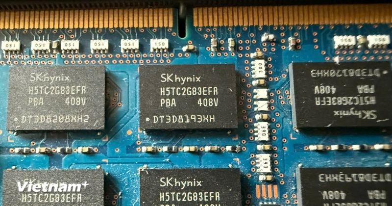
⚡
🔥
Xe xăng lần đầu mất vị thế toàn cầu, VinFast bán xe top 3 khu vực chỉ với xe điện
Các số liệu trong nửa đầu năm 2026 cho thấy xe xăng vẫn giữ quy mô lớn trên thị trường, nhưng vị thế áp đảo kéo dài nhiều thập niên đang dần bị thu hẹp trước sự phát triển của hybrid và xe thuần điện - Ảnh: South East Mo
🔥
Doanh nghiệp sẽ tự quyết giá xăng dầu theo công thức do Nhà nước quy định
Bà Nguyễn Thúy Hiền, Phó Cục trưởng Cục Quản lý và Phát triển thị trường trong nước (Bộ Công Thương) thông tin về dự thảo Nghị định về kinh doanh xăng dầu. Ảnh: Nam Nguyễn. Phát biểu tại họp báo, bà Nguyễn Thúy Hiền, Phó
🔥
Dự thảo Nghị định kinh doanh xăng dầu: Doanh nghiệp tự quyết giá nhưng không được tùy ý tăng, giảm
Bà Nguyễn Thúy Hiền, Phó Cục trưởng Cục Quản lý và Phát triển thị trường trong nước (Bộ Công Thương) thông tin về dự thảo Nghị định về kinh doanh xăng dầu - Ảnh: BTC Bà Nguyễn Thúy Hiền, Phó Cục trưởng Cục Quản lý và Phá
🔥
Giá xăng dầu hôm nay 7/10: Thế giới ít biến động, trong nước mai điều chỉnh
Giá dầu thế giới hôm nay Giá dầu quốc tế trong phiên giao dịch 6/10 gần như đi ngang. Giá dầu Brent duy trì ở mốc 100 USD/thùng. Chốt phiên giao dịch 6/10, theo Reuters, giá dầu Brent được niêm yết ở mức 100,6 USD/thùng,
⚡
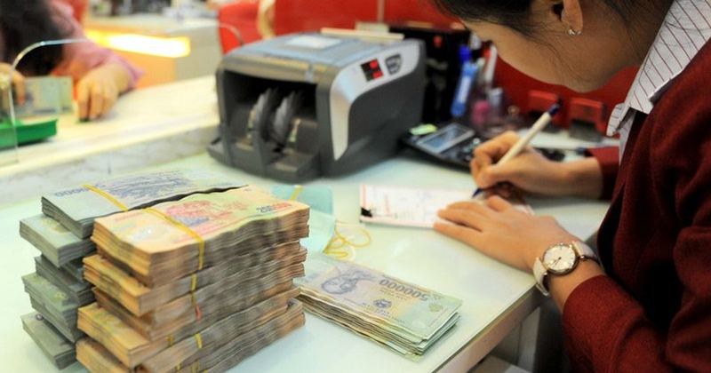
🔥Thêm 2,2 triệu tỉ đồng bổ sung cho nền kinh tế, tốc độ tăng lãi suất đang chậm lại
Ông Phạm Thanh Hà - Phó thống đốc Ngân hàng Nhà nước - cho biết tốc độ tăng lãi suất đang chậm lại - Ảnh: SBV Chiều 7-10, tại họp báo về kết quả hoạt động ngân hàng quý 3-2026, ông Phạm Thanh Hà - Phó thống đốc Ngân hàng
🔥
"Hố đen" AI hút tiền: Elon Musk muốn huy động 40 tỷ USD để SpaceX mua chip NVIDIA
"Hố đen" AI hút tiền: Elon Musk muốn huy động 40 tỷ USD để SpaceX mua chip NVIDIA Theo Hà Linh | 07/10/2026 15:55 PM | Công nghệ Theo dõi Cafebiz.vn trên SpaceX của Elon Musk đang tìm cách huy động khoảng 40 tỷ USD trong
🔥
Hơn 1.000 tỷ USD trái phiếu sắp đến hạn, nợ vượt 120% GDP: 'Tiền ma thuật' tại nền kinh tế top đầu châu Âu khiến nhà đầu tư run rẩy chuẩn bị kịch bản xấu
Hơn 1.000 tỷ USD trái phiếu sắp đến hạn, nợ vượt 120% GDP: 'Tiền ma thuật' tại nền kinh tế top đầu châu Âu khiến nhà đầu tư run rẩy chuẩn bị kịch bản xấu Theo Y Vân | 07/10/2026 09:22 AM | Kinh tế vĩ mô Theo dõi Cafebiz.
🔥
Tài phiệt Nga đã nhận lại tiền 'quà cưới' hoàn trả từ con trai ông Trump
Tài phiệt Nga đã nhận lại tiền 'quà cưới' hoàn trả từ con trai ông Trump Tỷ phú Umar Kremlev nói Donald Trump Jr. đã trả lại hàng trăm nghìn USD mà ông từng chi cho hai đêm tiệc ăn mừng đám cưới ở Bahamas. "Anh ấy gửi lạ
🔥
⚡
⚡
⚡
🔥
⚡
🔥
🔥
Triển khai gói hỗ trợ doanh nghiệp thương mại điện tử cho 126 xã, phường của Hà Nội
Facebook Twitter Lưu bài viết Bản in Copy link Ngày 7/10, TikTok Shop, Sở Công thương Hà Nội chính thức công bố chương trình "Hà Nội Vươn Mình." Chương trình hướng đến triển khai mô hình "Xã, Phường Thương Mại Điện Tử" t
🔥
Lãi suất thế giới tăng, tìm điểm cân bằng cho lãi suất, tỷ giá và cung ứng vốn
Lãi suất quốc tế tăng trở lại, đồng USD mạnh lên trong khi áp lực lạm phát trong nước gia tăng đang đặt chính sách tiền tệ của Việt Nam trước nhiều sức ép. Phó Thống đốc Ngân hàng Nhà nước Phạm Thanh Hà phát biểu tại Họp
🔥
🔥
 🔥
🔥
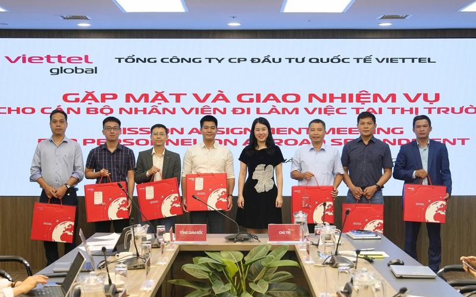
🔥32 cán bộ Viettel được điều động đi nửa vòng trái đất triển khai dự án 560 triệu USD trong 20 năm
VGI: Giá hiện tại Thay đổi Xem hồ sơ doanh nghiệp TIN MỚI Sáng 6/10/2026, Tổng CTCP Đầu tư Quốc tế Viettel (Viettel Global, mã chứng khoán VGI) tổ chức cuộc họp phê duyệt mô hình tổ chức và điều động cán bộ thực hiện nhi
⚡
⚡
🔥
Bộ Công Thương giải thích quy chuẩn trạm sạc xe điện phải 'đảm bảo khả năng kỹ thuật để dùng chung'
Ông Phạm Văn Quân, Phó cục trưởng Cục Công nghiệp - Ảnh: N.NAM Báo Tuổi Trẻ đặt câu hỏi về việc Bộ Công Thương vừa ban hành Thông tư 61 với quy định trạm sạc công cộng phải được thiết kế sẵn sàng dùng chung cho các xe đi
🔥
🔥
VietinBank rao bán chiếc xe Rolls-Royce hiếm có của đại gia xăng dầu để thu hồi nợ
TIN MỚI Ngân hàng TMCP Công Thương Việt Nam (VietinBank) - Chi nhánh 4 TP.HCM vừa thông báo lựa chọn tổ chức hành nghề đấu giá tài sản. Đáng chú ý, trong nhóm tài sản được VietinBank xử lý có chiếc Rolls-Royce Ghost màu
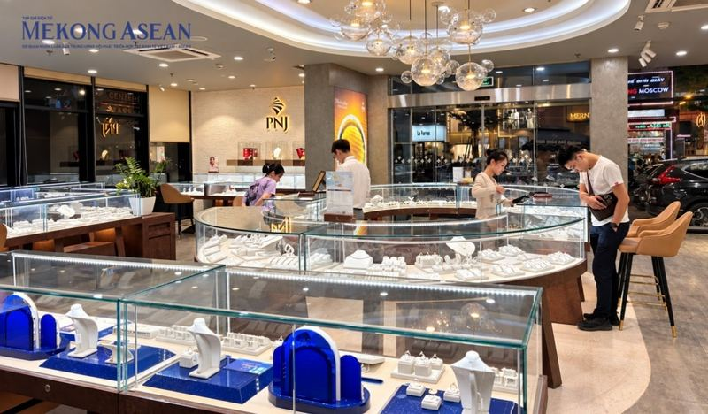
🔥
🔥
🔥
🔥
GDP của Việt Nam tăng cao gấp 3 lần thế giới, tín hiệu tăng tốc cuối năm
GDP tăng tốc, đầu tư công vào giai đoạn quyết định Kinh tế Việt Nam đang bước vào quý cuối năm với nền tảng tăng trưởng tích cực. GDP quý III/2026 tăng 9,95%, đưa mức tăng trưởng 9 tháng lên 9,01% - cao nhất kể từ năm 20
🔥
⚡
⚡
⚡
⚡
Biết bị điều tra, cựu Phó Chủ tịch tỉnh Thanh Hóa 'gấp rút' gặp con trai bầu Đoan trả lại 200.000 USD
Biết bị điều tra, cựu Phó Chủ tịch tỉnh Thanh Hóa 'gấp rút' gặp con trai bầu Đoan trả lại 200.000 USD Theo Hoàng An | 07/10/2026 19:11 PM | Xã hội Theo dõi Cafebiz.vn trên Ông Nguyễn Văn Thi (cựu Phó chủ tịch UBND tỉnh T
⚡
Phát huy vai trò Việt Nam và Panama làm cửa ngõ kết nối, hội nhập giữa Đông Nam Á và Mỹ Latinh
Tại buổi hội kiến, Thủ tướng Chính phủ Lê Minh Hưng hoan nghênh Tổng thống Panama và Phu nhân cùng đoàn đại biểu cấp cao Panama thăm chính thức Việt Nam; khẳng định đây là dấu mốc quan trọng trong quan hệ hai nước, tạo đ
⚡
⚡
⚡
Iraq chi 17 tỷ USD lập hành lang chiến lược kết nối Vùng Vịnh với châu Âu
Facebook Twitter Lưu bài viết Bản in Copy link Iraq đang thúc đẩy dự án Hành lang Phát triển trị giá khoảng 17 tỷ USD nhằm hình thành tuyến kết nối chiến lược từ Vùng Vịnh tới châu Âu, tích hợp vận tải đường bộ, đường sắ
🔥
🔥
🔥
Các dự án giao thông kết nối Việt-Lào tạo động lực hành lang kinh tế-xã hội
Facebook Twitter Lưu bài viết Bản in Copy link Nhận lời mời của Thủ tướng nước Cộng hòa Dân chủ Nhân dân Lào Saleumxay Kommasith, Thủ tướng Chính phủ Lê Minh Hưng và Đoàn đại biểu cấp cao Chính phủ Việt Nam sẽ thăm chính
🔥
🔥
Xử phạt một doanh nghiệp kinh doanh xăng dầu khi giấy phép đã hết hiệu lực
Đội Quản lý thị trường số 10 tiến hành thẩm tra, xác minh, làm việc tại Công ty TNHH T.T Thực hiện chỉ đạo của Bộ Công Thương, Cục Quản lý và Phát triển thị trường trong nước và Chi cục Quản lý thị trường (QLTT) tỉnh Tha
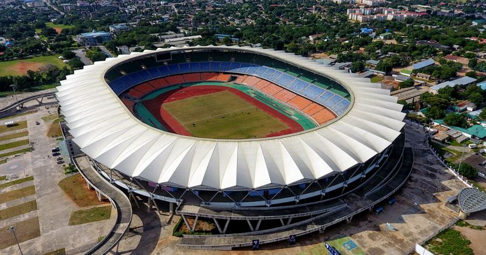
🔥Siêu sân vận động lớn gấp 1,5 lần sân Mỹ Đình đã hoàn thiện, tổng vốn đầu tư 1.400 tỷ, Trung Quốc góp vốn 45% và trực tiếp thi công
Siêu sân vận động lớn gấp 1,5 lần sân Mỹ Đình đã hoàn thiện, tổng vốn đầu tư 1.400 tỷ, Trung Quốc góp vốn 45% và trực tiếp thi công Theo Khánh Linh | 07/10/2026 10:33 AM | Kinh doanh Theo dõi Cafebiz.vn trên Đâu là một t
🔥
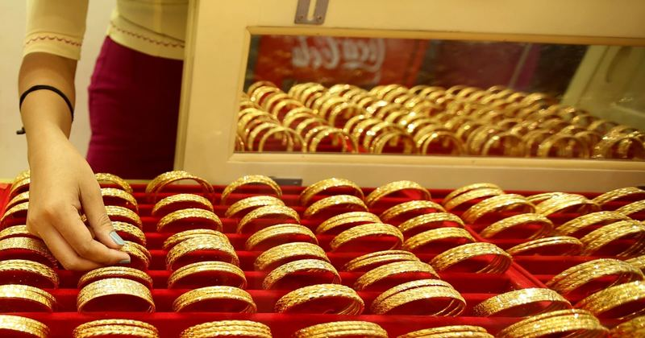
🔥Giá vàng tăng khi đồng USD và lợi suất trái phiếu chính phủ Mỹ đồng loạt giảm
Facebook Twitter Lưu bài viết Bản in Copy link Giá vàng thế giới tăng trong phiên giao dịch ngày 6/10, khi đà tăng lợi suất trái phiếu chính phủ Mỹ chững lại và đồng USD suy yếu. Vào lúc 1 giờ 12 phút sáng ngày 7/10 theo
🔥
⚡
Phát triển kinh tế biên mậu từ Cửa khẩu quốc tế đường bộ Khánh Bình-Chrey Thom
Ngày 3/10, Ủy ban nhân dân tỉnh An Giang phối hợp tỉnh Kandal tổ chức lễ khai trương cặp Cửa khẩu quốc tế đường bộ Khánh Bình-Chrey Thom. Sự kiện mở ra không gian phát triển kinh tế biên mậu, tạo thêm cơ hội thúc đẩy thư
🔥
🔥
🔥
Một công ty bảo hiểm nhân thọ mang hơn 182.000 tỷ đồng đầu tư cổ phiếu, trái phiếu và gửi ngân hàng
TIN MỚI Báo cáo tài chính riêng giữa niên độ 2026 cho thấy, đến cuối tháng 6, tổng tài sản của Prudential Việt Nam đạt 196.755 tỷ đồng. Với quy mô trên, Prudential là công ty bảo hiểm lớn thứ hai tại Việt Nam chỉ sau Tập
🔥
🔥
Ông Trump dự báo xung đột Ukraine sắp kết thúc, nói về đàm phán với Iran
Theo TASS, Tổng thống Mỹ Donald Trump ngày 6/10 đã đưa ra những cập nhật về tình hình xung đột Ukraine và Iran tại một sự kiện vận động ở Maryland. "Dù mọi người có tin hay không, thì hòa bình cũng đang đến gần. Cuộc xun
🔥
Ông Trump sẽ điện đàm với ông Putin về ca tử vong tại viện nghiên cứu dịch hạch
Ông Trump sẽ điện đàm với ông Putin về ca tử vong tại viện nghiên cứu dịch hạch Tổng thống Trump cho biết sẽ sớm trao đổi với Tổng thống Putin về ca tử vong tại viện nghiên cứu chống dịch hạch, sau khi đề nghị giúp đỡ. "
🔥
🔥
🔥
⚡
⚡
⚡
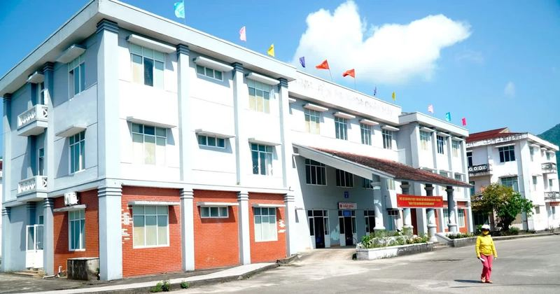
⚡Hơn trăm tỷ đầu tư Bệnh viện Chân Mây, hồ sơ sai phạm chuyển cơ quan điều tra
Chiều 7/10, tại buổi họp báo thường kỳ quý III của UBND TP. Huế, liên quan câu hỏi của phóng viên báo Tiền Phong , ông Trần Hữu Thùy Giang - Phó Chủ tịch UBND thành phố đã thông tin về hướng xử lý những tồn tại, vướng mắ
⚡
Đại diện 32 nước NATO đến Kiev, nhà máy sản xuất tên lửa của Ukraine bị tấn công
Báo Ukrainska Pravda trích dẫn thông điệp trên mạng xã hội X của Đô đốc Giuseppe Cavo Dragone, Chủ tịch Ủy ban Quân sự NATO trên X cho biết vào ngày 6/12, đại diện quân sự của cả 32 nước thành viên NATO đã có mặt tại thủ
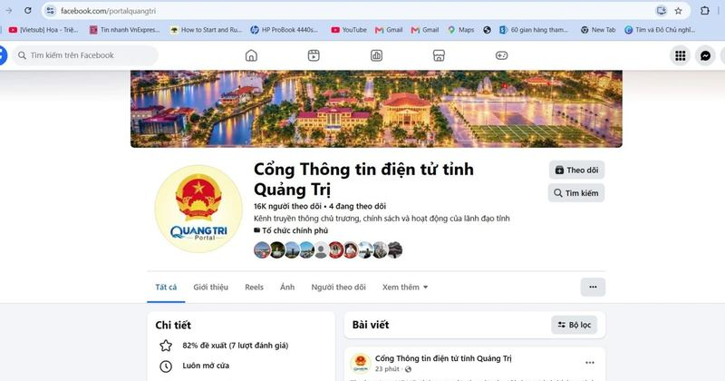
⚡
⚡
Quy chuẩn mới về trạm sạc xe điện: Bảo đảm tương thích, không bắt buộc chia sẻ
Quy chuẩn mới về trạm sạc xe điện: Bảo đảm tương thích, không bắt buộc chia sẻ Theo Phúc Hậu | 07/10/2026 18:49 PM | Kinh doanh Theo dõi Cafebiz.vn trên Liên quan đến việc trạm sạc xe điện có được dùng chung giữa các hãn
⚡
⚡
Hai doanh nghiệp sắp chia 3.000 đồng/cp: Lợi nhuận tăng vọt, cổ tức tiền mặt thuộc hàng “khủng”
TIN MỚI Hai doanh nghiệp khoáng sản là Tổng công ty Khoáng sản TKV - CTCP (Vimico, mã KSV) và CTCP Kim loại màu Thái Nguyên - Vimico (mã TMG) cùng lên kế hoạch tạm ứng cổ tức năm 2026 bằng tiền mặt với tỷ lệ 30%, tương ứ
🔥
Bộ Công Thương lên kịch bản ứng phó siêu El Nino, bảo đảm cung ứng điện cuối năm
Facebook Twitter Lưu bài viết Bản in Copy link Chiều 7/10, tại họp báo thường kỳ quý 3/2026 của Bộ Công Thương, ông Bùi Quốc Hùng, Phó Cục trưởng Cục Điện lực (Bộ Công Thương) nhận định từ nay đến cuối năm 2026, thời tiế
🔥
🔥
🔥
🔥
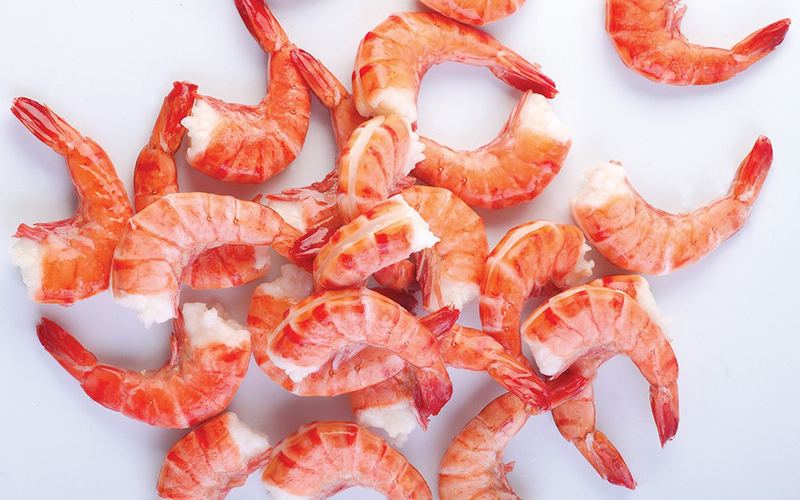
🔥Cổ phiếu ‘cọng hành’ 4.500 đồng, một doanh nghiệp muốn vay thêm gần 700 tỷ đồng
TIN MỚI HĐQT CTCP Camimex Group (HoSE: CMX) vừa thông qua một loạt phương án huy động vốn mới, gồm vay ngân hàng trong nước, vay quỹ phát triển nước ngoài, phát hành trái phiếu và gọi nhà đầu tư chiến lược vào công ty co
🔥
🔥
🔥
Cựu Phó Chủ tịch Thanh Hóa với 200.000 USD và cuộc gặp con trai "Bầu Đoan"
(Dân trí) - Sau khi Đông Á trúng đấu giá dự án Quảng Thành, "Bầu Đoan" mang 200.000 USD đến nhà ông Nguyễn Văn Thi. Khi vụ án bị xác minh, số tiền trên được trả lại cùng tờ giấy bị ghi lùi ngày. Theo kết luận điều tra củ
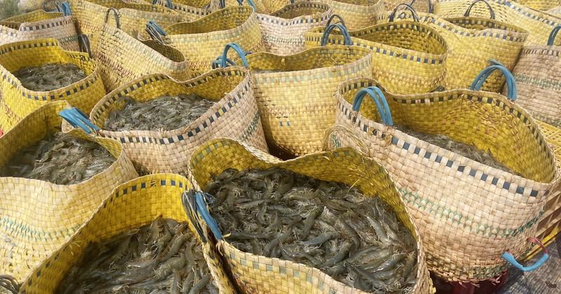
🔥
🔥
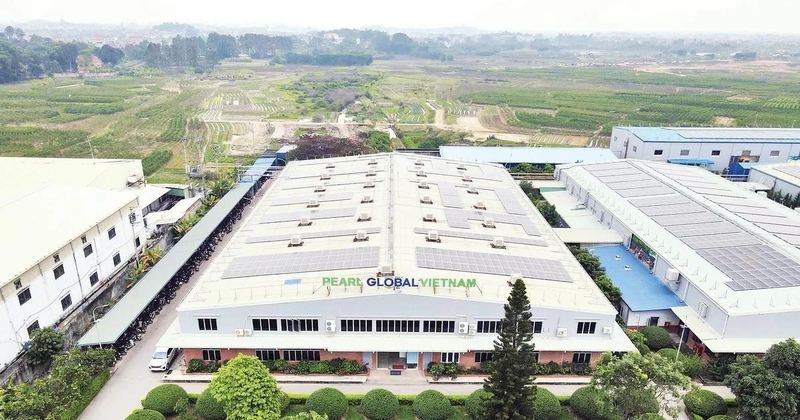
🔥
⚡
Thời kỳ “thắt lưng buộc bụng” trở lại khi nợ công toàn cầu vượt mốc 100% GDP
Facebook Twitter Lưu bài viết Bản in Copy link Phát biểu trước thềm Hội nghị thường niên của IMF và Ngân hàng Thế giới (WB) diễn ra tại Bangkok, Tổng Giám đốc Quỹ Tiền tệ Quốc tế (IMF) Kristalina Georgieva đã đưa ra lời
⚡
Việt Nam kêu gọi tăng cường hợp tác quốc tế tạo động lực cho phát triển bền vững
Facebook Twitter Lưu bài viết Bản in Copy link Trong hai ngày 5-6/10, tại trụ sở Liên hợp quốc ở New York (Mỹ), Ủy ban Kinh tế - Tài chính (Ủy ban 2) Đại hội đồng Liên hợp quốc khóa 81 đã tiến hành Phiên thảo luận chung
⚡
Lối sống lạ lùng của cặp vợ chồng Mỹ gốc Hoa: nuôi 21 'đứa con', giao dịch hàng trăm triệu đô mỗi năm
Cặp vợ chồng Guojun Xuan (phải) và Silvia Zhang tại phiên tòa ngày 6-10 với nhiều cáo buộc về bạo hành trẻ em - Ảnh: AP Theo Hãng tin AP ngày 7-10, cặp vợ chồng Guojun Xuan, 66 tuổi, và Silvia Zhang, 39 tuổi, bị bắt ngày
⚡
⚡
⚡
⚡
Panama sẵn sàng hỗ trợ Việt Nam tiếp cận các thị trường và chuỗi cung ứng khu vực Châu Mỹ
Thủ tướng Chính phủ Lê Minh Hưng hội kiến Tổng thống nước Cộng hòa Panama José Raúl Mulino Quintero - Ảnh: chinhphu.vn/Nhật Bắc Thủ tướng Chính phủ Lê Minh Hưng hoan nghênh Tổng thống Panama và Phu nhân cùng đoàn đại biể
⚡
🔥
Giúp đỡ, hướng dẫn để tăng tỉ lệ người dân nộp hồ sơ trực tuyến về đất đai
Giám đốc Sở Nông nghiệp - Môi trường TPHCM Nguyễn Toàn Thắng phát biểu chỉ đạo chiều 7-10. Ảnh: Trà Giang Bà Bùi Thị Bích Tuyền, Giám đốc Văn phòng Đăng ký đất đai thành phố, cho biết trong 9 tháng đầu năm toàn hệ thống
🔥
🔥
Hơn 5.700 ngôi nhà bị thu hồi trong 1 tháng, 40.277 BĐS khác chuẩn bị chịu cảnh tương tự: Chuyện gì xảy ra tại nền kinh tế số 1 thế giới?
Hơn 5.700 ngôi nhà bị thu hồi trong 1 tháng, 40.277 BĐS khác chuẩn bị chịu cảnh tương tự: Chuyện gì xảy ra tại nền kinh tế số 1 thế giới? Theo Anh Dũng | 07/10/2026 16:49 PM | Kinh doanh Theo dõi Cafebiz.vn trên Ngày càn
🔥
🔥
🔥
🔥
Kinh tế đêm TPHCM: Cần cơ chế để doanh nghiệp, hộ kinh doanh cùng tham gia
(Dân trí) - Để phát triển kinh tế đêm ở TPHCM, chuyên gia đề xuất lấy ẩm thực làm mũi nhọn, phát triển chợ, phố, khai thác vỉa hè theo hướng văn minh... có thể tạo sinh kế cho nhiều hộ kinh doanh nhỏ. Theo Sở Du lịch TPH
🔥
⚡
⚡
⚡
⚡
⚡
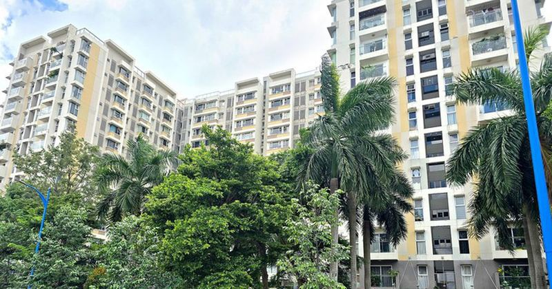
⚡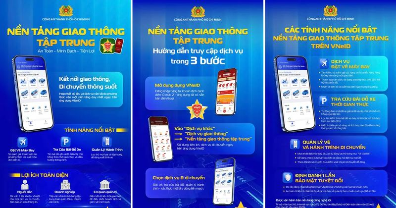
⚡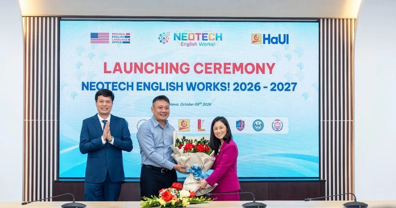
🔥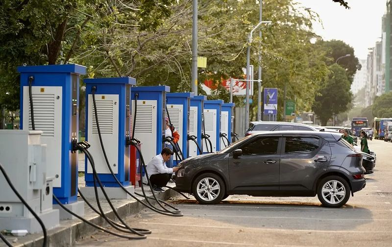
🔥Quy chuẩn mới về trạm sạc xe điện: Bảo đảm tương thích, không bắt buộc chia sẻ
Họp báo thường kỳ do Bộ Công thương tổ chức chiều 7-10. Ảnh: NAM NGUYỄN Chiều 7-10, tại họp báo thường kỳ của Bộ Công thương, ông Phạm Văn Quân, Phó Cục trưởng Cục Công nghiệp, cho biết quy chuẩn mới về trụ sạc, trạm sạc
🔥
Chuyện gì đây: Nhóm cổ phiếu đào kho báu nổi sóng, công ty khai thác vàng lớn nhất Việt Nam kịch trần, MSR của tỷ phú Nguyễn Đăng Quang bật gần 8%
Chuyện gì đây: Nhóm cổ phiếu đào kho báu nổi sóng, công ty khai thác vàng lớn nhất Việt Nam kịch trần, MSR của tỷ phú Nguyễn Đăng Quang bật gần 8% Theo Anh Khôi | 07/10/2026 16:47 PM | Kinh doanh Theo dõi Cafebiz.vn trên
🔥
Tàu chở dầu cháy dữ dội ngoài khơi Nga vì bị xuồng không người lái tấn công
Báo Guardian trích dẫn dẫn thông cáo ngày 7/10 của Bộ Giao thông vận tải Nga cho biết: “Tàu chở dầu thô đang cháy dữ dội ở vùng biển Biển Đen. Công tác chữa cháy sẽ bắt đầu khi cường độ đám cháy giảm bớt và các tàu cứu h
🔥
🔥
🔥
Quy định về an toàn, quản lý rủi ro đối với việc ứng dụng AI trong ngân hàng
TIN MỚI Đáng chú ý, quy định mới đặt ra hàng loạt yêu cầu liên quan trực tiếp đến quyền lợi khách hàng, từ việc phải thông báo khi khách hàng đang tương tác với AI, giải thích các quyết định tự động, cho phép con người r
🔥
Moskva hứng chịu đợt tập kích lớn, loạt vụ tấn công mới gây gián đoạn hoạt động các trung tâm dữ liệu của Ukraine
Chào mừng quý độc giả và thính giả đến với Bản tin Thế giới - chuyên mục podcast quốc tế hàng ngày trên Báo Điện tử VietnamPlus. Tại đây, chúng tôi cập nhật nhanh nhất những diễn biến nổi bật toàn cầu trong 24 giờ qua, g
🔥
2 máy bay va chạm tại sân bay Mỹ: Airbus A350 chở 290 người chuẩn bị cất cánh bất ngờ đâm vào máy bay đang được kéo khỏi vị trí đỗ
2 máy bay va chạm tại sân bay Mỹ: Airbus A350 chở 290 người chuẩn bị cất cánh bất ngờ đâm vào máy bay đang được kéo khỏi vị trí đỗ Theo Phạm Trang | 07/10/2026 11:18 AM | Xã hội Theo dõi Cafebiz.vn trên Hai máy bay đã va
🔥
🔥
Công chứng điện tử, đăng ký biện pháp bảo đảm toàn trình-MB tiên phong số hóa
MB tiên phong triển khai công chứng điện tử và đăng ký biện pháp bảo đảm toàn trình trên môi trường số Ghi dấu ấn trên thị trường là ngân hàng tiên phong chuyển đổi số, MB luôn lấy khách hàng làm trọng tâm trong mọi hoạt
🔥
🔥
Lãi suất ngân hàng Sacombank mới nhất ngày 7/10: Gửi kỳ hạn nào có lãi suất cao nhất?
TIN MỚI Lãi suất tại quầy cao nhất 6,9%/năm Đối với tiền gửi VND tại quầy, Sacombank áp dụng mức lãi suất 0,5%/năm cho các khoản tiền gửi dưới 1 tháng. Ở nhóm kỳ hạn ngắn từ 1-5 tháng, lãi suất được phân hóa theo số tiền
🔥
Mỹ gia tăng sức ép, ông Trump lên lịch nói chuyện với ông Putin về dịch hạch
Tổng thống Mỹ Donald Trump (trái) và Tổng thống Nga Vladimir Putin - Ảnh: AFP Ngày 6-10, Tổng thống Mỹ Donald Trump cho biết ông sẽ sớm nói chuyện với Tổng thống Nga Vladimir Putin về cái chết của một nhân viên Viện Nghi
🔥
Người California phẫn nộ sau khi Tổng thống Trump nói cứ để Iran ‘xóa sổ’ Los Angeles, San Diego
TIN MỚI Ông Trump nhún nhảy tại cuộc mít tinh vận động tranh cử ở Grand Island, Nebraska, ngày 5/10. (Ảnh AP) Phát biểu tại cuộc vận động chính trị ở vùng nông nghiệp của bang Nebraska ngày 5/10, ông Trump nói về những h
🔥
🔥
Người California phẫn nộ sau khi Tổng thống Trump nói cứ để Iran ‘xóa sổ’ Los Angeles, San Diego
Ông Trump nhún nhảy tại cuộc mít tinh vận động tranh cử ở Grand Island, Nebraska, ngày 5/10. (Ảnh AP) Phát biểu tại cuộc vận động chính trị ở vùng nông nghiệp của bang Nebraska ngày 5/10, ông Trump nói về những hy sinh v
🔥
Đội tuyển Trung Quốc thua trắng cả 3 trận, trải qua giai đoạn tệ nhất lịch sử
Đó là các thất bại 0-3 trước New Zealand, 0-5 trước Palestine và mới nhất là việc bị Tajikistan đánh gục 0-1 ngay trên sân nhà vào tối 6/10. Đội tuyển Trung Quốc từng bỏ FIFA ASEAN Cup 2026 để tự tổ chức một giải giao hữ
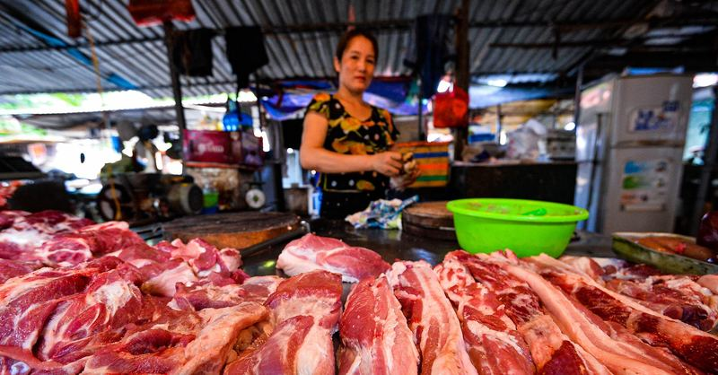
🔥Chi gần 2,2 tỷ USD nhập khẩu, thịt giá siêu rẻ tiếp tục tràn về Việt Nam
Theo thống kê mới nhất của Cục Hải quan (Bộ Tài chính), trong tháng 9, các doanh nghiệp nước ta đã chi hơn 251,7 triệu USD để nhập khẩu thịt và sản phẩm từ thịt, tăng 16,2% so với tháng 8/2026. Lũy kế 9 tháng năm 2026, k
🔥
🔥
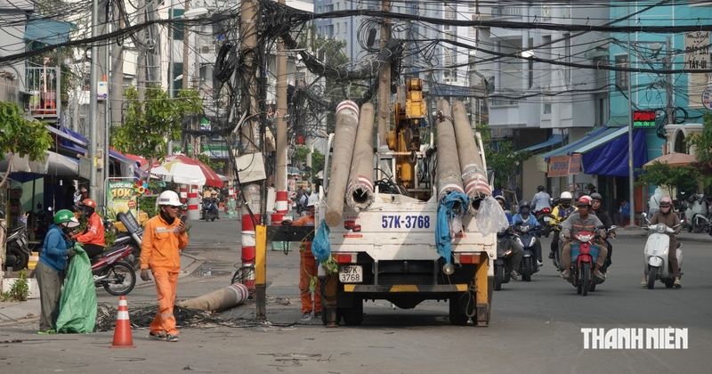
🔥
🔥
Lãi suất ngân hàng HDBank ngày 7/10: Gửi kỳ hạn nào có lãi suất cao nhất?
TIN MỚI Khảo sát ngày 7/10, Ngân hàng TMCP Phát triển TP.HCM (HDBank) tiếp tục duy trì mặt bằng lãi suất huy động ở mức cạnh tranh trong nhóm ngân hàng thương mại. Lãi suất tiền gửi tại quầy Theo biểu lãi suất tiền gửi t
⚡
⚡
⚡
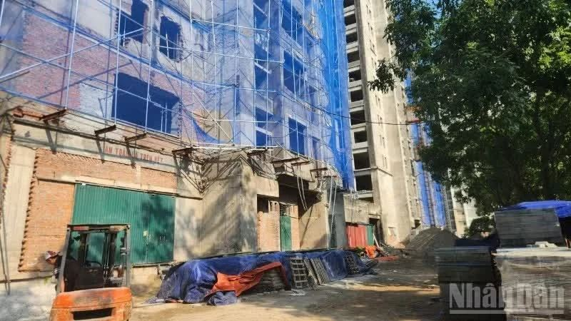
⚡
⚡
VNPT Threat Intelligence được vinh danh tại ASOCIO Digital & AI Awards 2026
VNPT Threat Intelligence được vinh danh tại ASOCIO Digital & AI Awards 2026 Ánh Dương | 07/10/2026 19:30 PM | Kinh doanh Theo dõi Cafebiz.vn trên Nền tảng Thám báo An ninh mạng VNPT Threat Intelligence do VNPT Cyber Immu
⚡
⚡
Thành lập Hội đồng thẩm định Báo cáo nghiên cứu tiền khả thi cao tốc Mộc Châu - Sơn La - Điện Biên
Phối cảnh cao tốc Mộc Châu - Sơn La - Điện Biên, đoạn qua địa phận tỉnh Sơn La. Theo Quyết định, Chủ tịch Hội đồng thẩm định nhà nước thẩm định Báo cáo nghiên cứu tiền khả thi Dự án này là Bộ trưởng Bộ Xây dựng. 2 Phó Ch
⚡
[Video] Tiêu điểm 7/10: Cuộc chiến tỷ đô phía sau lời cảnh báo về nguy cơ của AI với nhân loại
Khi công nghệ chạm đến những ranh giới mới, nỗi lo sợ lớn nhất không còn nằm trong trí tưởng tượng của phim ảnh, mà nó đang hiện hữu ngay từ chính bên trong các phòng nghiên cứu. Hàng loạt những "ông lớn" công nghệ cùng
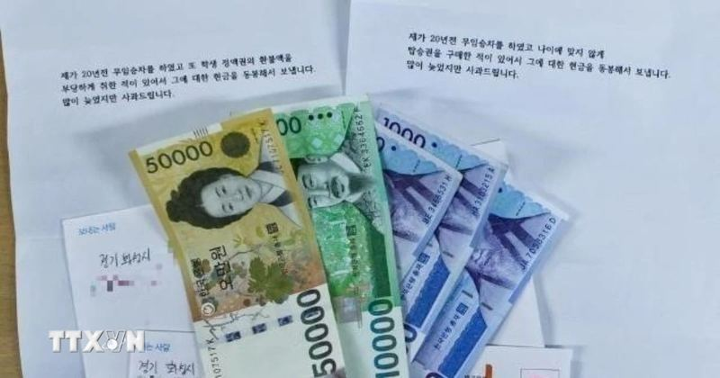
⚡
🔥
🔥
Hơn 2,2 triệu tỷ đồng được bơm thêm vào nền kinh tế, dòng vốn đang chảy vào đâu?
Đến cuối tháng 9/2026, dư nợ tín dụng toàn nền kinh tế đạt khoảng 20,75 triệu tỷ đồng, tăng 11,59% so với cuối năm 2025, tương ứng khoảng 2,2 triệu tỷ đồng vốn được bổ sung. Quang cảnh Họp báo. Cam kết cho vay nhà ở xã h
🔥
🔥
🔥
🔥
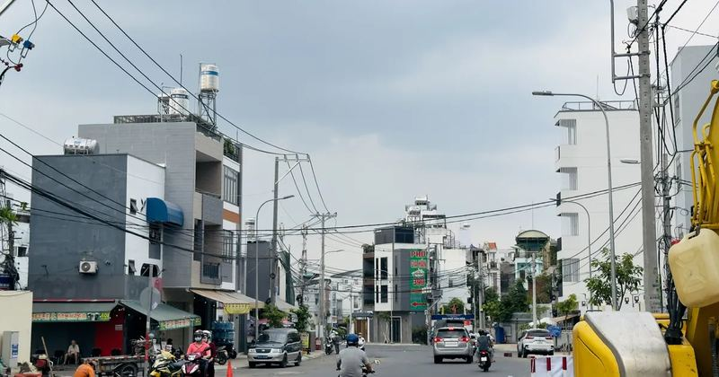
🔥
🔥
ORIBEA bắt tay Welcome ENM Việt Nam: Blueseed Group tiến vào thương mại điện tử K-Beauty
ORIBEA bắt tay Welcome ENM Việt Nam: Blueseed Group tiến vào thương mại điện tử K-Beauty Ánh Dương | 07/10/2026 17:30 PM | Kinh doanh Theo dõi Cafebiz.vn trên Thương vụ giữa ORIBEA và Welcome ENM Việt Nam không chỉ mở th
🔥
Từ 15/11: Có quy định mới liên quan đến các giao dịch chuyển khoản từ 10 triệu đồng được xử lý tự động bằng AI
Từ 15/11: Có quy định mới liên quan đến các giao dịch chuyển khoản từ 10 triệu đồng được xử lý tự động bằng AI Theo Linh San | 07/10/2026 16:22 PM | Kinh doanh Theo dõi Cafebiz.vn trên Ngân hàng Nhà nước vừa ban hành Thô
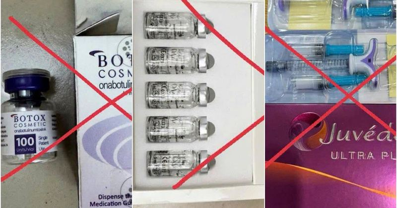
🔥Triệt phá đường dây sản xuất, san chiết filler, botox thẩm mỹ trị giá 500 tỉ
Cơ quan Cảnh sát điều tra Công an TP. Hà Nội cho biết đã khởi tố vụ án, khởi tố 21 bị can về tội "buôn bán hàng cấm ", quy định tại điều 190 bộ luật Hình sự. Sai phạm được phát hiện liên quan đến đường dây chuyên sản xuấ
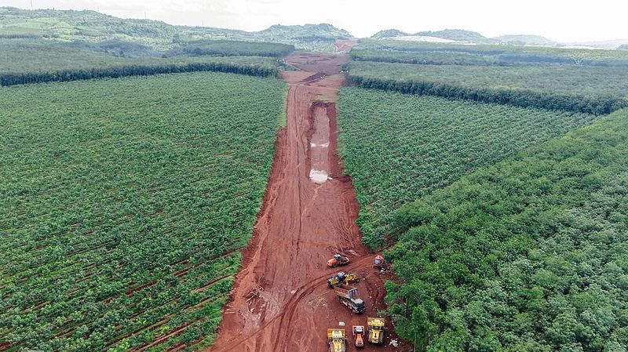
🔥
🔥
🔥
Tin tức giá xe: Kia Soluto giảm giá còn dưới 300 triệu đồng, xe hạng B rẻ như xe điện mini
Kia Soluto giảm 46 triệu đồng, giá từ 299 triệu - Ảnh: Đại lý Kia Soluto giảm giá 'sập sàn' Kia Soluto phân phối ở Việt Nam hiện chỉ còn hai phiên bản MT và Deluxe với giá niêm yết lần lượt 345 triệu đồng và 375 triệu đồ
🔥
🔥
Giá USD hôm nay 7.10.2026: Quay đầu giảm trong khi euro, bảng Anh bật tăng
Sáng 7.10, Ngân hàng Nhà nước công bố tỷ giá trung tâm giữa VND với USD ở mức 25.638 đồng, giảm 7 đồng so với hôm qua. Trong khi đó, giá USD tại Ngân hàng Vietcombank giảm 10 đồng khi mua chuyển khoản xuống 25.800 đồng,
🔥
🔥
Đã cài app do người lạ gửi qua Zalo: Công an chỉ rõ 4 bước xử lý đúng để không bị mất tiền trong tài khoản ngân hàng
TIN MỚI Theo Công an tỉnh Hà Tĩnh, mã độc chiếm quyền điều khiển điện thoại, giả mạo ứng dụng của cơ quan nhà nước, đang là hình thức lừa đảo nguy hiểm nhất hiện nay. Kẻ gian tiếp cận người dân qua Zalo, Facebook rồi dụ
🔥
Con trai ông Phạm Nhật Vượng đang tuyển nhân viên mới, công việc liên quan nhiều tới tài sản công ty, yêu cầu thành thạo tin học văn phòng, ưu tiên giỏi 1 kỹ năng, lương lên tới hơn 20 triệu đồng/tháng
TIN MỚI GSM - Công ty Cổ phần Di chuyển Xanh và Thông minh - hiện do ông Phạm Nhật Minh Hoàng, con trai thứ hai của tỷ phú Phạm Nhật Vượng , đảm nhiệm vị trí Tổng Giám đốc GSM toàn cầu kiêm Tổng Giám đốc GSM Việt Nam. Mớ
🔥
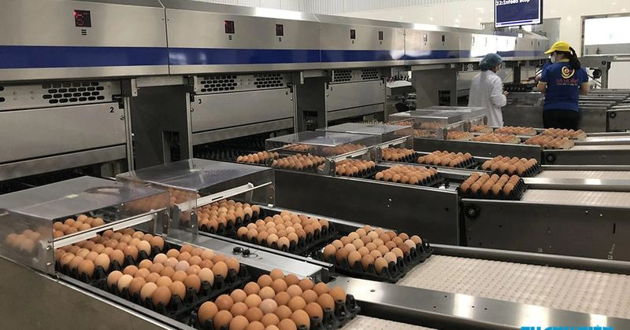
🔥 🔥
🔥
Các ngân hàng Việt Nam huy động vốn nước ngoài nhiều chưa từng thấy: Đâu là nguyên nhân?
TIN MỚI Các ngân hàng Việt Nam huy động hàng tỷ USD từ thị trường quốc tế Làn sóng huy động vốn quốc tế đang lan rộng tại các ngân hàng Việt Nam. Không chỉ thông qua các khoản vay hợp vốn với định chế tài chính nước ngoà
🔥
Các ngân hàng Việt Nam huy động vốn nước ngoài nhiều chưa từng thấy: Đâu là nguyên nhân?
TIN MỚI Các ngân hàng Việt Nam huy động hàng tỷ USD từ thị trường quốc tế Làn sóng huy động vốn quốc tế đang lan rộng tại các ngân hàng Việt Nam. Không chỉ thông qua các khoản vay hợp vốn với định chế tài chính nước ngoà
🔥
LHP Busan 2026: Phạm Băng Băng là tâm điểm, Dương Tử Quỳnh được vinh danh
Sự kiện thảm đỏ lễ khai mạc Liên hoan phim quốc tế Busan được tổ chức tại Trung tâm Điện ảnh Busan tối 6/10 quy tụ hàng trăm ngôi sao hàng đầu Hàn Quốc lẫn quốc tế. Trong ảnh là diễn viên Trung Quốc Phạm Băng Băng . Phạm
⚡
Công an phối hợp MBBank xác minh giao dịch nhận 400 triệu đồng với nội dung "Thanh toán tiền mua hàng"
Công an phối hợp MBBank xác minh giao dịch nhận 400 triệu đồng với nội dung "Thanh toán tiền mua hàng" Theo Minh Anh | 07/10/2026 20:59 PM | Xã hội Theo dõi Cafebiz.vn trên Công an xã Long Cốc, Phú Thọ đã phối hợp với Ng
⚡
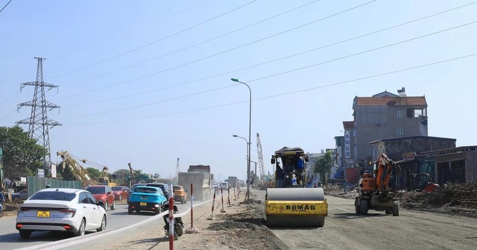
⚡Hà Nội: Dự án nâng cấp Quốc lộ 6 gần 9.600 tỷ đồng trước nguy cơ chậm tiến độ
Ngày 7/10, Phó Chủ tịch UBND thành phố Hà Nội Trương Việt Dũng đã đi kiểm tra thực địa Dự án đầu tư cải tạo nâng cấp Quốc lộ 6, đoạn Ba La - Xuân Mai. Báo cáo tại buổi kiểm tra, Phó Giám đốc Ban Quản lý dự án Đầu tư xây
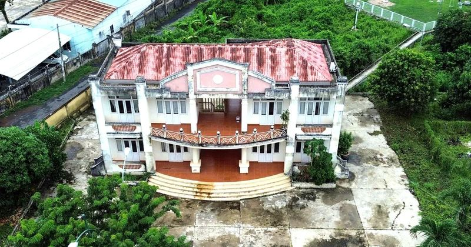
⚡
⚡
⚡
⚡
Bỗng dưng đứng tên doanh nghiệp, bị chặn ở sân bay: 'Giám đốc' khắc khoải gỡ vướng
Bỗng dưng đứng tên doanh nghiệp, bị chặn ở sân bay: 'Giám đốc' khắc khoải gỡ vướng Theo Việt Linh | 07/10/2026 20:30 PM | Kinh doanh Theo dõi Cafebiz.vn trên TPO - Phát hiện thông tin cá nhân bị sử dụng trái phép để đứng
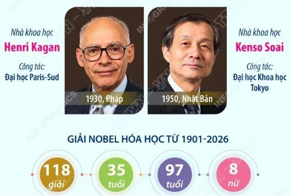
⚡
⚡
⚡
⚡
[Video] Dự báo thời tiết đêm nay và ngày mai 8/10/2026: Bắc Bộ đêm lạnh, vùng núi trời rét, Trung Bộ có nơi mưa đặc biệt lớn
Tại Bắc Bộ, thời tiết phổ biến không mưa. Đêm và sáng sớm tiết trời se lạnh, riêng vùng núi cao trời rét. Sang ngày mai, trời nắng, thời tiết khô ráo và ấm lên nhanh vào ban ngày.
⚡
⚡
⚡
Quảng Ninh: Chuyển đổi xanh, chuyển đổi số vì mục tiêu phát triển bền vững
Facebook Twitter Lưu bài viết Bản in Copy link Theo Cổng Thông tin điện tử thành phố Quảng Ninh, Quảng Ninh đang đứng trước yêu cầu chuyển đổi mạnh mẽ mô hình phát triển theo hướng xanh hơn, thông minh hơn và có khả năng
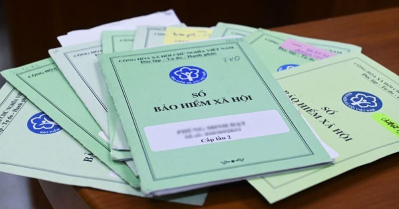
⚡BHXH Việt Nam thông báo nóng danh sách các đơn vị chậm đóng, trốn đóng BHXH, BHYT: Cái tên đứng đầu nợ gần 50 tỷ đồng
BHXH Việt Nam thông báo nóng danh sách các đơn vị chậm đóng, trốn đóng BHXH, BHYT: Cái tên đứng đầu nợ gần 50 tỷ đồng Theo Thu Phương | 07/10/2026 19:45 PM | Xã hội Theo dõi Cafebiz.vn trên Danh sách hàng chục nghìn đơn
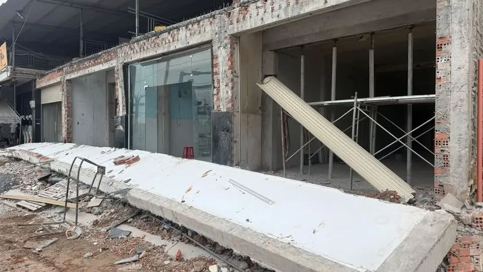
⚡
⚡
Nhiều hoạt động tại Hội chợ kết nối giao thương và quảng bá sản phẩm Việt Nam-Campuchia 2026
Hội chợ triển lãm bao gồm các hoạt động chính: Hội chợ trưng bày, giới thiệu sản phẩm, dịch vụ tiêu biểu của các doanh nghiệp trong và ngoài quân đội của hai nước Việt Nam-Campuchia . Hoạt động chính trị-xã hội, đối ngoạ
⚡
Cô giáo mầm non cứu bé trai 2 tuổi nhận danh hiệu "Thanh niên sống đẹp" 2026
Ngày 10/10 tới đây, Trung ương Hội Liên hiệp thanh niên Việt Nam sẽ phối hợp TCP Việt Nam và các đơn vị liên quan tổ chức Gala " Thanh niên sống đẹp " năm 2026 tại Thủ đô Hà Nội. Qua đây, Ban tổ chức sẽ trao Giải thưởng
⚡
⚡
⚡
⚡
⚡
Phát hiện 21 đứa trẻ con gia đình siêu giàu bị ngược đãi trong “ngôi nhà kinh hoàng”
Phát hiện 21 đứa trẻ con gia đình siêu giàu bị ngược đãi trong “ngôi nhà kinh hoàng” Theo Chi Chi | 07/10/2026 19:08 PM | Xã hội Theo dõi Cafebiz.vn trên "Ngôi nhà này chỉ có thể được mô tả là ngôi nhà kinh hoàng đối với
⚡
Bỗng dưng đứng tên doanh nghiệp, bị chặn ở sân bay: 'Giám đốc' khắc khoải gỡ vướng
Bị lỡ 3 chuyến đi nước ngoài Chia sẻ với PV Tiền Phong , bà Lương Thị Ánh Nga (ở TPHCM) cho biết, năm 2023, sau khi một người bạn bị chặn tại sân bay do liên quan đến khoản nợ thuế của một doanh nghiệp, bà thử tra cứu số
⚡
⚡
Một cổ phiếu trên HOSE tăng dựng đứng lên đỉnh lịch sử, sắp họp cổ đông bất thường
TIN MỚI Cổ phiếu PVP của CTCP Vận tải Dầu khí Thái Bình Dương tiếp tục nối dài đà đi lên trong phiên 7/10, tăng 2,93% lên 24.600 đồng/cổ phiếu. Đây là mức giá đóng cửa cao nhất lịch sử của mã này. Thanh khoản đạt hơn 2,3
⚡
Vụ án tại Viện Pháp y tâm thần Trung ương: Bị cáo Nguyễn Thị Mai Anh lãnh án 30 năm tù
Theo đó, bị cáo Nguyễn Thị Mai Anh (trú ở Hà Nội) bị tuyên phạt tổng cộng 30 năm tù về các tội “Đưa hối lộ”, “Môi giới hối lộ”, “Lừa đảo chiếm đoạt tài sản”. Chồng bị cáo Mai Anh là Lê Văn Đông bị tuyên phạt 19 năm tù về
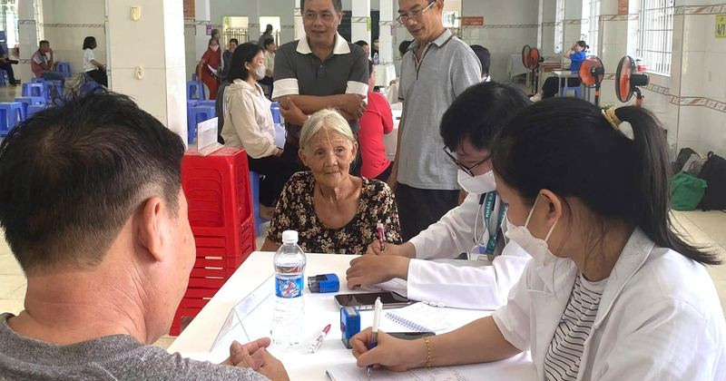
⚡
⚡
Hai cựu Viện trưởng Viện Pháp y tâm thần Trung ương bị phạt hơn 27 năm tù
Facebook Twitter Lưu bài viết Bản in Copy link Sau 10 ngày xét xử và nghị án, chiều 7/10, Tòa án Nhân dân thành phố Hà Nội đã tuyên án phạt 2 cựu Viện trưởng Viện Pháp y tâm thần Trung ương cùng 63 bị cáo trong vụ án xảy
⚡
⚡
⚡
Ông Nguyễn Đức Tài tuyển người cùng bán rau: Chỉ cần ngồi nhà, có tài khoản ngân hàng và biết dùng "tuyệt chiêu" trên mạng xã hội
Ông Nguyễn Đức Tài tuyển người cùng bán rau: Chỉ cần ngồi nhà, có tài khoản ngân hàng và biết dùng "tuyệt chiêu" trên mạng xã hội Theo An Thái | 07/10/2026 18:23 PM | Kinh doanh Theo dõi Cafebiz.vn trên Không cần bỏ vốn
⚡
🔥
🔥
🔥
Cả X đang rầm rộ vì 27 phút Anthropic dạy viết prompt cho Claude, trong khi ngoài kia người ta bán khóa học 300 USD
Cả X đang rầm rộ vì 27 phút Anthropic dạy viết prompt cho Claude, trong khi ngoài kia người ta bán khóa học 300 USD Thiên Minh | 07/10/2026 14:32 PM | Công nghệ Theo dõi Cafebiz.vn trên Không tốn phí, không cần đăng ký t
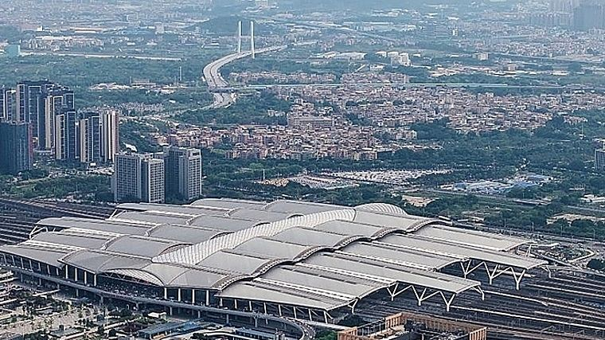
🔥
🔥
72% khách hàng sẵn sàng rời bỏ thương hiệu nếu sự cố không được xử lý kịp thời: Doanh nghiệp còn bao nhiêu cơ hội để sửa sai?
72% khách hàng sẵn sàng rời bỏ thương hiệu nếu sự cố không được xử lý kịp thời: Doanh nghiệp còn bao nhiêu cơ hội để sửa sai? Nhật Lê | 07/10/2026 10:21 AM | Kinh doanh Theo dõi Cafebiz.vn trên Một trải nghiệm không tốt
🔥
🔥
🔥
NÓNG: Nhiều tiếng nổ vang lên ở thủ đô Kiev, Nga tấn công quy mô lớn bằng tên lửa và drone?
Người dân trú ẩn bên trong một ga tàu điện ngầm trong lúc Nga tấn công tên lửa vào Kiev, Ukraine ngày 7-10-2026 - Ảnh: REUTERS Báo The Kyiv Independent (Ukraine) chạy dòng tít: "Nga tấn công Kiev bằng tên lửa và máy bay
🔥
🔥
Đề xuất đánh thuế đất bỏ hoang gấp 7 lần đất trong hạn mức: Người dân, doanh nghiệp lo bị đánh thuế 'nhầm'
Tính đến ngày 5-9, TP.HCM tồn đọng 1.338 dự án gặp khó khăn, vướng mắc, với tổng diện tích hơn 30.691ha, và tổng vốn đầu tư 658.084 tỉ đồng - Ảnh: THẾ KIỆT Doanh nghiệp, người dân đ ồng tình chủ trương nhưng lo bị "oan "
🔥
Đề xuất đánh thuế đất bỏ hoang gấp 7 lần đất trong hạn mức: Người dân, doanh nghiệp lo bị đánh thuế 'nhầm'
Tính đến ngày 5-9, TP.HCM tồn đọng 1.338 dự án gặp khó khăn, vướng mắc, với tổng diện tích hơn 30.691ha, và tổng vốn đầu tư 658.084 tỉ đồng - Ảnh: THẾ KIỆT Doanh nghiệp, người dân đ ồng tình chủ trương nhưng lo bị "oan "
🔥
Bộ Tài chính được bổ sung nhiệm vụ hỗ trợ tín dụng phát triển hạ tầng bán lẻ
Phó Thủ tướng Thường trực Phạm Gia Túc vừa ký Quyết định số 1922/QĐ-TTg ngày 4/10/2026 của Thủ tướng Chính phủ sửa đổi, bổ sung một số nội dung của Chiến lược phát triển thị trường bán lẻ Việt Nam đến năm 2030, tầm nhìn
🔥
🔥
🔥
🔥
Giá dầu giằng co giữa rủi ro nguồn cung và đà tăng xuất khẩu từ Trung Đông
Facebook Twitter Lưu bài viết Bản in Copy link Giá dầu thế giới biến động không đáng kể trong phiên giao dịch ngày 6/10 sau khi phục hồi từ đà giảm trước đó. Thị trường hiện đang giằng co giữa một bên là sự gia tăng xuất
🔥
Ukraine dội 'mưa' máy bay không người lái vào Mátxcơva, nhắm trúng kho nhiên liệu quan trọng
Thị trưởng Mátxcơva Sergei Sobyanin cho biết, ngày 6/10, Ukraine đã phóng hơn 650 UAV về phía thủ đô của Nga. Phần lớn các UAV đã bị phá hủy ở "tuyến phòng thủ từ xa", trong khi 134 chiếc bị đánh chặn ngay khi tiếp cận M
🔥
Dự báo VN-Index sắp có nhịp hồi phục, Vietcap gọi tên 4 cổ phiếu tiềm năng trong tháng 10
TIN MỚI Trong báo cáo mới đây, Chứng khoán Vietcap nhận định triển vọng thị trường chứng khoán trong tháng 10 được đặt trong bối cảnh đan xen giữa nền tảng vĩ mô tích cực và những rủi ro bên ngoài vẫn ở mức cao. Ở chiều
 ⚡
⚡
Nghị quyết Phiên họp Chính phủ thường kỳ tháng 9 và Hội nghị trực tuyến Chính phủ với địa phương
Facebook Twitter Lưu bài viết Bản in Copy link Thủ tướng Chính phủ Lê Minh Hưng thay mặt Chính phủ ký ban hành Nghị quyết số 312/NQ-CP ngày 5/10/2026 về Phiên họp Chính phủ thường kỳ tháng 9/2026 và Hội nghị trực tuyến C
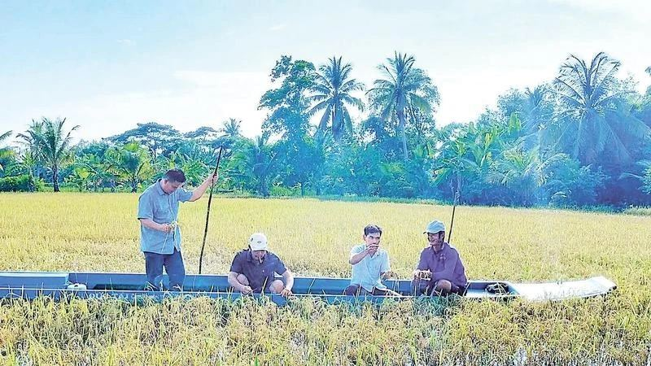
⚡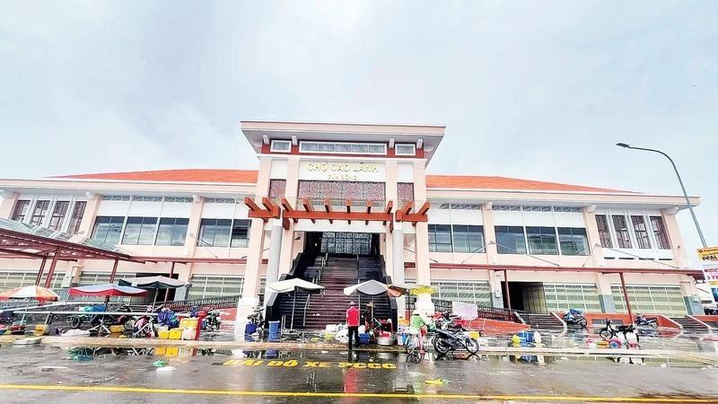
⚡
⚡
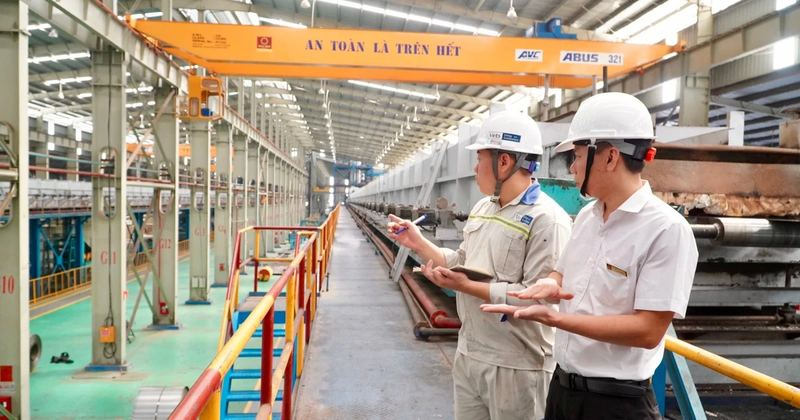
⚡Bộ Công Thương ban hành quy định mới về lập, thực hiện kế hoạch sử dụng năng lượng tiết kiệm và hiệu quả
Thông tư số 64/2026/TT-BCT quy định về 5 nhóm nội dung gồm: xây dựng danh sách cơ sở sử dụng năng lượng trọng điểm hằng năm; xây dựng kế hoạch và báo cáo thực hiện kế hoạch hằng năm, 5 năm về sử dụng năng lượng tiết kiệm
⚡
Từ “bán sản phẩm” đến “giải bài toán sản phẩm”: Marketing nên bắt đầu từ đâu?
Từ “bán sản phẩm” đến “giải bài toán sản phẩm”: Marketing nên bắt đầu từ đâu? Ánh Dương | 07/10/2026 19:30 PM | Kinh doanh Theo dõi Cafebiz.vn trên Khi doanh số chưa đạt kỳ vọng, câu hỏi quen thuộc là nên triển khai chiế
⚡
⚡
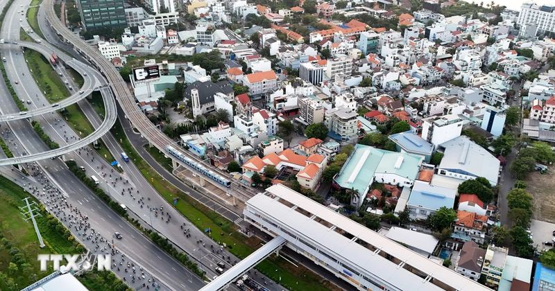
⚡Tham vấn cơ chế phát hành trái phiếu quốc tế qua trung tâm tài chính quốc tế
Facebook Twitter Lưu bài viết Bản in Copy link Tại cuộc họp tham vấn về phát hành trái phiếu quốc tế tại Trung tâm Tài chính quốc tế Việt Nam tại Thành phố Hồ Chí Minh (VIFC-HCMC), do VIFC-HCMC phối hợp với Tổ chức Tài c
⚡
Nghị định 377/2026/NĐ-CP tăng dư địa cho PPP, mở rộng hợp tác công - tư trong công nghệ
Nghị định 377/2026/NĐ-CP được kỳ vọng tạo thêm dư địa cho khu vực tư nhân tham gia các dự án đối tác công - tư (PPP), đặc biệt trong lĩnh vực khoa học, công nghệ, đổi mới sáng tạo và chuyển đổi số. Cùng với đó là các quy
⚡
⚡
🔥
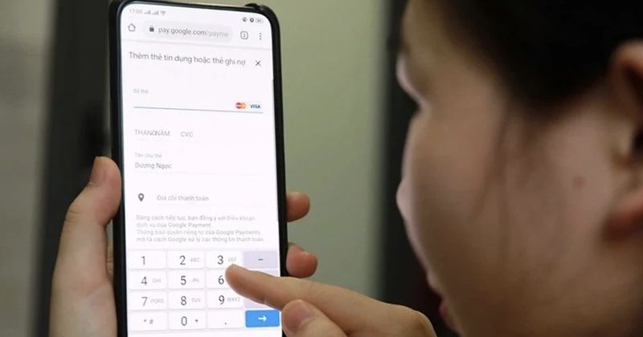
🔥Hơn 1,9 triệu lượt khách hàng dừng giao dịch 6.300 tỉ đồng sau cảnh báo lừa đảo
Thông tin được ông Lê Hoàng Chính Quang, Cục trưởng Cục Công nghệ thông tin Ngân hàng Nhà nước, cho biết tại họp báo quý 3/2026. Theo ông Quang, các hành vi lừa đảo nhằm vào khách hàng sử dụng dịch vụ ngân hàng để chiếm
🔥
🔥
🔥
Vietcombank đồng đầu tư Quán Nhà Haha, đưa dàn nghệ sĩ lên bộ sưu tập thiết kế thẻ độc quyền
Bà Đoàn Hồng Nhung - Thành viên BĐH, Giám đốc Khối Bán lẻ Vietcombank (ở giữa) đại diện ngân hàng nhận hoa và biểu trưng từ đơn vị sản xuất tại họp báo ra mắt Quán Nhà Haha Tiếp nối Gia Đình Haha , Quán Nhà Haha đưa dàn
🔥
Vietcombank đồng đầu tư Quán Nhà Haha, đưa dàn nghệ sĩ lên bộ sưu tập thiết kế thẻ độc quyền
Bà Đoàn Hồng Nhung - Thành viên BĐH, Giám đốc Khối Bán lẻ Vietcombank (ở giữa) đại diện ngân hàng nhận hoa và biểu trưng từ đơn vị sản xuất tại họp báo ra mắt Quán Nhà Haha Tiếp nối Gia Đình Haha , Quán Nhà Haha đưa dàn
🔥
Ngoài Vinhomes và VinFast, Vingroup có thêm 2 ‘quân bài’ tăng trưởng mới
GSM và VinEnergo được nhận định sẽ là động lực lớn của Vingroup - Ảnh: VinFast Công ty CP Chứng khoán TP.HCM (HSC) cho biết đội ngũ nghiên cứu vừa tham dự chuyến tham quan thực địa, thảo luận chuyên đề và gặp gỡ ban lãnh
🔥
🔥
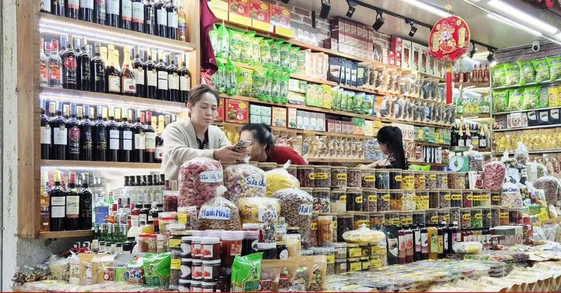
🔥99% cá nhân, hộ kinh doanh có thể sẽ được áp dụng phương pháp tính thuế đơn giản
99% cá nhân, hộ kinh doanh có thể sẽ được áp dụng phương pháp tính thuế đơn giản Theo Ban Thời sự | 07/10/2026 14:54 PM | Kinh tế vĩ mô Theo dõi Cafebiz.vn trên VTV.vn - Có tới 99% cá nhân, hộ kinh doanh và 81% doanh ngh
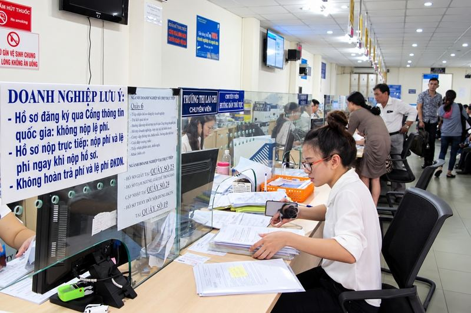
🔥
🔥
Khởi tố 21 bị can, thu giữ gần 123.000 sản phẩm thuốc, thiết bị y tế dùng trong thẩm mỹ
Ngày 7-10, Công an TP Hà Nội cho biết Phòng Cảnh sát kinh tế vừa phát hiện, làm rõ đường dây tổ chức sản xuất, san chiết, đóng gói, buôn bán thuốc và thiết bị y tế sử dụng trong lĩnh vực thẩm mỹ. Đường dây do Trần Minh Đ
🔥
🔥
Chủ tịch FPT Retail Nguyễn Bạch Điệp vào Top 100 Phụ nữ quyền lực nhất châu Á 2026 của Fortune
Bà Nguyễn Bạch Điệp - Chủ tịch HĐQT Công ty CP Bán lẻ Kỹ thuật số FPT (FPT Retail). Ảnh: FPT Long Châu Danh sách Most Powerful Women Asia 2026 do Fortune công bố ngày 06/10, ghi nhận 100 nữ lãnh đạo có tầm ảnh hưởng đến
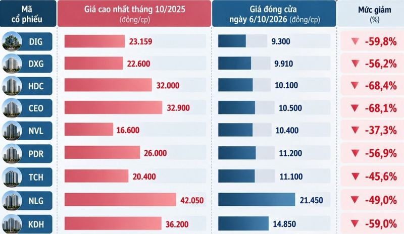
🔥
🔥
Máy gia cố nền hàng chục tấn bất ngờ đổ ngã chắn ngang đường tại Thành phố Hồ Chí Minh
Bản tin 60s ngày 7/10/2026 gồm những nội dung sau: Máy gia cố nền hàng chục tấn bất ngờ đổ ngã chắn ngang đường tại Thành phố Hồ Chí Minh. Cửa hàng xe máy ở Thành phố Hồ Chí Minh bốc cháy dữ dội kèm tiếng nổ lớn lúc sáng
🔥
Cửa hàng xe máy ở Thành phố Hồ Chí Minh bốc cháy dữ dội kèm tiếng nổ lớn lúc sáng sớm
Bản tin 60s ngày 7/10/2026 gồm những nội dung sau: Cửa hàng xe máy ở Thành phố Hồ Chí Minh bốc cháy dữ dội kèm tiếng nổ lớn lúc sáng sớm. Máy gia cố nền hàng chục tấn bất ngờ đổ ngã chắn ngang đường tại Thành phố Hồ Chí
🔥
Liên danh Tập đoàn Sơn Hải và DN của tỷ phú Trần Bá Dương đề xuất nâng vốn lên gần 10.800 tỷ đồng để làm tuyến cao tốc rút ngắn thời gian từ Đông Nam Bộ đến Tây Nguyên
Liên danh Tập đoàn Sơn Hải và DN của tỷ phú Trần Bá Dương đề xuất nâng vốn lên gần 10.800 tỷ đồng để làm tuyến cao tốc rút ngắn thời gian từ Đông Nam Bộ đến Tây Nguyên Theo Thế Anh | 07/10/2026 11:13 AM | Kinh doanh Theo
🔥
🔥
🔥
🔥
🔥
Doanh thu tăng vọt nhưng niềm tin chạm đáy: Chuyện lạ của 5 "ông trùm" mua sắm online lớn nhất Trung Quốc
Doanh thu tăng vọt nhưng niềm tin chạm đáy: Chuyện lạ của 5 "ông trùm" mua sắm online lớn nhất Trung Quốc Pa Dun | 07/10/2026 08:00 AM | Sống Theo dõi Cafebiz.vn trên Giá trị thương hiệu vẫn tăng, thứ hạng toàn cầu vẫn n
🔥
 🔥
🔥
Novaland dự kiến phát hành 1,73 triệu cổ phiếu để chuyển đổi trái phiếu quốc tế
NVL: Giá hiện tại Thay đổi Xem hồ sơ doanh nghiệp TIN MỚI CTCP Tập đoàn Đầu tư Địa ốc No Va (Novaland, mã: NVL) vừa thông qua phương án phát hành cổ phiếu để chuyển đổi một phần trái phiếu quốc tế theo yêu cầu của trái c
🔥
🔥
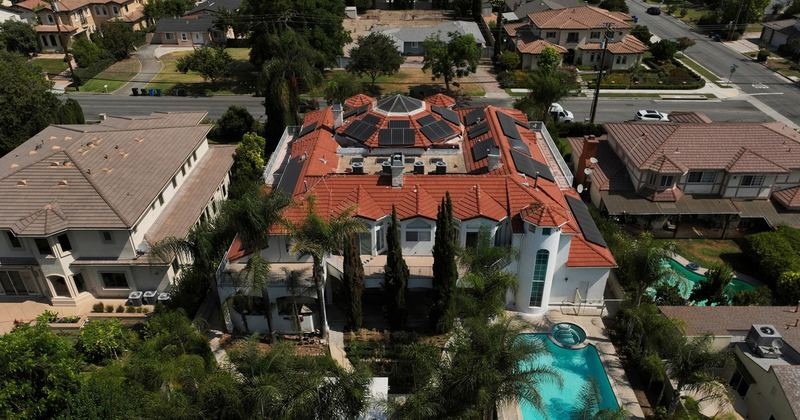
🔥
🔥
🔥
🔥
🔥
🔥
🔥
🔥
🔥
Tin vui cực lớn đến từ Brazil, Nhật Bản, Ả Rập Xê Út, mở ra “cơ hội vàng” cho Việt Nam
TIN MỚI Thông tin từ Hiệp hội Chế biến và Xuất khẩu Thủy sản Việt Nam (VASEP), 8 tháng đầu năm 2026, kim ngạch xuất khẩu cá rô phi của Việt Nam đạt 90 triệu USD, tăng 43% so với cùng kỳ năm 2025. Brazil trở thành thị trư
🔥
Sáng nay có tọa đàm tìm lời giải để phát triển kinh tế miền núi bền vững
(Dân trí) - Tọa đàm sẽ phân tích những điểm nghẽn trong phát triển kinh tế - xã hội miền núi, đồng thời đề xuất giải pháp khai thác lợi thế bản địa, tạo sinh kế bền vững và nâng cao đời sống người dân. 9h30 hôm nay (7/10
🔥
🔥
Tin tức thế giới 7-10: Biểu tình ở Pháp 'nóng', Iran và ông Trump lên tiếng
Tổng thống Mỹ Donald Trump phát biểu tại bang Maryland ngày 6-10-2026 - Ảnh: AFP Biểu tình ở Pháp tiếp tục "nóng", ông Trump đổ lỗi cho Hồi giáo và vấn đề di cư Ngày 6-10, Tổng thống Mỹ Donald Trump cho rằng các cuộc biể
🔥
🔥
Lưới lửa AI trên mái nhà ở Ukraine: Công nghệ độc đáo đánh chặn ‘sát thủ bầu trời’ Geran Nga
Ukraine tung 12 tháp pháo AI diệt UAV Shahed/Geran lắp trên mái nhà ở thủ đô Kyiv. Ảnh: kyivindependent.com Thủ đô Kyiv của Ukraine vừa triển khai bước tiến công nghệ đột phá trong cuộc chiến phòng không khi đưa vào vận
🔥
🔥
Dự báo một sóng tăng mới có thể kéo dài sang đầu 2027, CTCK điểm tên 8 doanh nghiệp đáng chú ý, phù hợp để "xuống tiền" trong tháng 10
TIN MỚI Chứng khoán VikkiBankS cho rằng tháng 10 vẫn có thể là giai đoạn biến động mạnh của VN-Index, song những nhịp điều chỉnh sâu cũng đang mở ra cơ hội tích lũy cho một nhịp tăng mới kéo dài từ cuối năm 2026 sang đầu
🔥
⚡
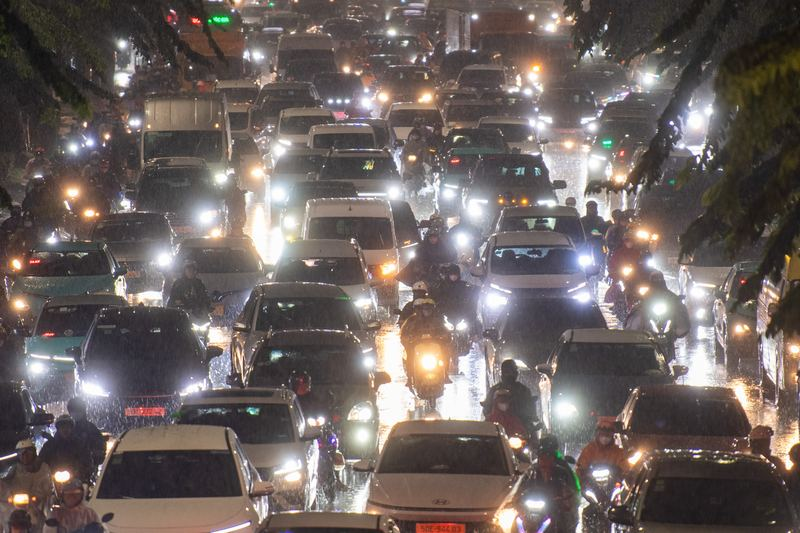
⚡
⚡
⚡
⚡
⚡
⚡
⚡
⚡
🔥
🔥
🔥
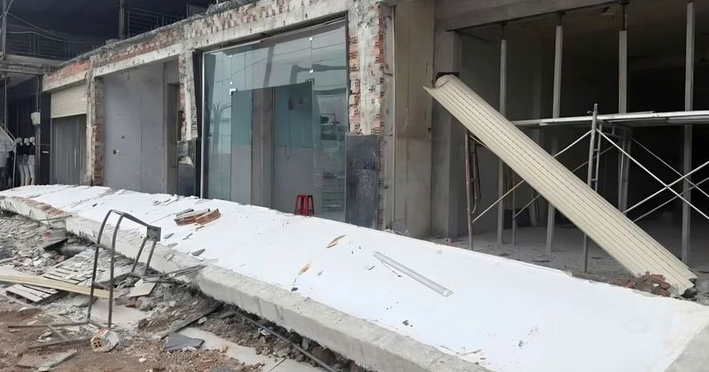
🔥
🔥
🔥
Ông Nguyễn Đức Tài tuyển người cùng bán rau: Chỉ cần ngồi nhà, có tài khoản ngân hàng và biết dùng "tuyệt chiêu" trên mạng xã hội
TIN MỚI Bách Hóa XANH - chuỗi bán lẻ thuộc hệ sinh thái Thế Giới Di Động (MWG) của ông Nguyễn Đức Tài - đang đẩy mạnh chương trình tiếp thị liên kết (Affiliate), qua đó mở rộng lực lượng bán hàng ra ngoài đội ngũ nhân vi
 🔥
🔥
🔥
🔥
Giảm án cho nhiều bị cáo trong vụ gây thất thoát lãng phí tại dự án Bệnh viện Bạch Mai, Việt Đức cơ sở 2
Cựu Bộ trưởng Nguyễn Thị Kim Tiến tại phiên tòa phúc thẩm - Ảnh: TAND Tối cao Ghi nhận bà Nguyễn Thị Kim Tiến khắc phục xong 108 tỷ đồng và nộp thêm 1,1 tỷ đồng giúp các bị cáo khác, HĐXX phúc thẩm đã chấp nhận kháng cáo
🔥
Ông Nguyễn Việt Dũng đảm nhiệm chức vụ Chủ tịch Petrolimex Vĩnh Long từ 10.10.2026
Ngày 05.10.2026, tại Văn phòng Công ty TNHH MTV Petrolimex Vĩnh Long (Petrolimex Vĩnh Long/Công ty), Tập đoàn Xăng dầu Việt Nam (Petrolimex/Tập đoàn) tổ chức Lễ công bố các quyết định về công tác cán bộ tại Công ty. Tập
🔥
Phó Thủ tướng: Xử lý nhà thầu sân bay Long Thành không đáp ứng yêu cầu tiến độ
Văn phòng Chính phủ vừa có thông báo kết luận của Phó Thủ tướng thường trực Phạm Gia Túc tại buổi kiểm tra hiện trường, đôn đốc tiến độ thực hiện dự án Cảng hàng không quốc tế Long Thành và các tuyến đường giao thông kết
🔥
Một cổ phiếu ngân hàng bứt phá phiên VN-Index đỏ lửa, có lúc tăng kịch trần
TIN MỚI Cổ phiếu SSB của Ngân hàng TMCP Đông Nam Á (SeABank) có lúc bứt tốc lên giá trần trong phiên 7/10, chạm 17.950 đồng/cổ phiếu. Tuy nhiên, lực mua hạ nhiệt về cuối phiên khiến mã này đóng cửa tại 17.200 đồng/cổ phi
🔥
🔥
Sửa đổi một số quy định về Cơ chế thử nghiệm có kiểm soát trong lĩnh vực ngân hàng
Trong đó, Nghị định số 382/2026/NĐ-CP sửa đổi và bổ sung một số khoản Điều 7 Nghị định số 94/2025/NĐ-CP về nguyên tắc lập và gửi hồ sơ đăng ký tham gia Cơ chế thử nghiệm, điều chỉnh giải pháp thử nghiệm, dừng thử nghiệm,
🔥
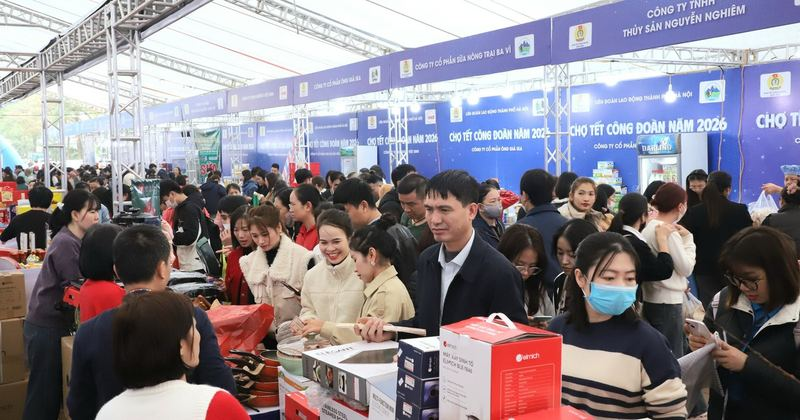
🔥Triển khai nhiều hoạt động chăm lo cho người lao động dịp Tết Đinh Mùi 2027
Chương trình "Chợ Tết Công đoàn - Xuân 2027" sẽ được triển khai ở các tỉnh thành phố trên cả nước - Ảnh minh họa Ngày 7/10, Tổng Liên đoàn Lao động Việt Nam thông tin về kế hoạch tổ chức các hoạt động chăm lo cho đoàn vi
🔥
🔥
🔥
🔥
AIA Elite Summit 2026: Khi di sản và sức khỏe được đặt trong một tầm nhìn dài hạn
AIA Elite Summit 2026 là Hội nghị cấp cao thuộc hệ sinh thái AIA Elite, quy tụ các chuyên gia trong nước và quốc tế để mở ra những góc nhìn chuyên sâu về quản trị tài sản, hoạch định di sản, chuyển giao thế hệ và khoa họ
🔥
Sacombank được vinh danh Thương hiệu Mạnh 2026: Vững nội lực, kiến tạo và giá trị bền vững
Đây là dấu mốc tiếp nối hành trình xây dựng và củng cố thương hiệu của ngân hàng, đồng thời phản ánh những chuyển động đáng chú ý của Sacombank trong năm 2026. Chương trình này do Tạp chí Kinh tế Việt Nam tổ chức, nhằm g
🔥
Bà Mai Kiều Liên tiếp tục được vinh danh trong tốp 100 phụ nữ quyền lực nhất Châu Á
Bà Mai Kiều Liên lần thứ ba liên tiếp được Fortune vinh danh trong Top 100 Phụ nữ quyền lực nhất châu Á. Ảnh: Vi Nam Dấu ấn của “nữ tướng” ngành sữa Trong danh sách Most Powerful Women Asia 2026, Fortune xếp bà Mai Kiều
🔥
Thủ tướng Lê Minh Hưng thăm Lào và Campuchia, thúc đẩy quan hệ hợp tác đi vào chiều sâu
Từ ngày 8 đến 10/10, Thủ tướng Chính phủ Lê Minh Hưng sẽ thăm Lào và Campuchia theo lời mời của Thủ tướng Lào Saleumxay Kommasith và Thủ tướng Campuchia Hun Manet. Đây là chuyến thăm hai nước đầu tiên của Thủ tướng Lê Mi
🔥
Dự báo lợi nhuận ngân hàng quý 3/2026 sẽ có bất ngờ lớn: Vietcombank, VietinBank, MB, Techcombank, VPBank, HDBank,...
Dự báo lợi nhuận ngân hàng quý 3/2026 sẽ có bất ngờ lớn: Vietcombank, VietinBank, MB, Techcombank, VPBank, HDBank,... Theo Minh Vy | 07/10/2026 08:45 AM | Kinh doanh Theo dõi Cafebiz.vn trên VPBankS dự báo lợi nhuận sau
🔥
SACOMBANK tăng 13 bậc trong bảng xếp hạng thương hiệu ngân hàng toàn cầu
Theo báo cáo Banking 500 năm 2026 của Brand Finance, Sacombank xếp thứ 336 về giá trị thương hiệu ngân hàng toàn cầu, tăng 13 bậc và có năm thứ bảy liên tiếp góp mặt. Bà Nguyễn Thị Kiều Anh, Phó Tổng giám đốc SACOMBANK đ
🔥
🔥
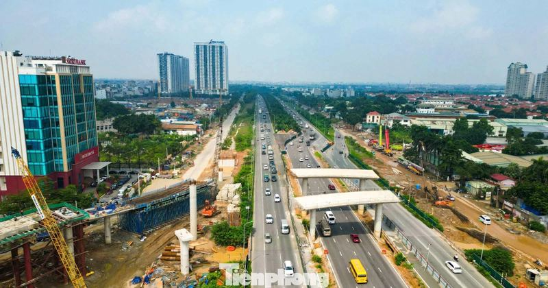
🔥Lộ diện hình dáng đại nút giao kết nối Vành đai 3,5 với trục đại lộ lớn nhất Thủ đô
TIN MỚI VIDEO: Đại nút giao kết nối Vành đai 3,5 với trục đại lộ lớn nhất Thủ đô đang được gấp rút thi công. Dự án nút giao Vành đai 3,5 - Đại lộ Thăng Long được UBND thành phố Hà Nội phê duyệt triển khai trong giai đoạn
🔥
🔥
🔥
Hàn Quốc nói Ukraine xin lỗi 'chưa thỏa đáng' về vụ binh lính Triều Tiên
Theo Yonhap, Ngoại trưởng Hàn Quốc Cho Hyun ngày 6/10 xác nhận tại phiên điều trần trước quốc hội rằng phía Ukraine đã xin lỗi vì công khai thông tin chuyển giao binh lính Triều Tiên, nhưng không tiết lộ cụ thể Kiev đã x
🔥
Dân chơi Đồng Nai dành hàng trăm triệu hồi sinh Honda NSR250R Repsol hàng hiếm
Chi hàng trăm triệu để tìm lại chiếc xe trong ký ức Honda NSR250R MC28 Repsol là phiên bản SP cuối cùng của dòng NSR250R MC28. Xe được giới thiệu tại Nhật Bản vào tháng 1/1996 với số lượng giới hạn 1.000 chiếc. Giá bán l
🔥
Tin tức sáng 7-10: Dù giảm, hiệu suất của VN-Index vẫn 'đỡ' hơn loạt thị trường trong khu vực
Ảnh minh họa: QUANG ĐỊNH Dù giảm, hiệu suất của VN-Index vẫn 'đỡ' hơn loạt thị trường trong khu vực Trong báo cáo chiến lược tháng 10-2026, Chứng khoán VNDirect cho biết VN-Index giảm 3,5% trong tháng 9 so với cuối tháng
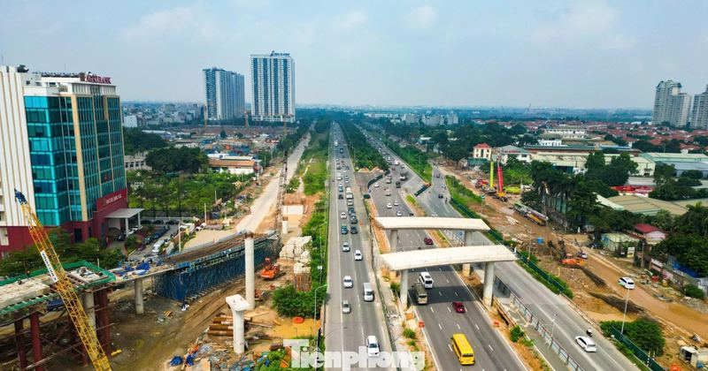
🔥Lộ diện hình dáng siêu nút giao kết nối Vành đai 3,5 với trục đại lộ lớn nhất Thủ đô
VIDEO: Đại nút giao kết nối Vành đai 3,5 với trục đại lộ lớn nhất Thủ đô đang được gấp rút thi công. Dự án nút giao Vành đai 3,5 - Đại lộ Thăng Long được UBND thành phố Hà Nội phê duyệt triển khai trong giai đoạn 2022-20
🔥
Ukraine phóng hỏa lực nhiều chưa từng có vào Nga, Moscow chuẩn bị đánh lớn
(Dân trí) - Truyền thông Ukraine dựa vào số liệu do Moscow công bố cho biết, Kiev đã phóng số lượng hỏa lực nhiều chưa từng có nhằm vào các mục tiêu tại Nga. Một vụ tập kích của Ukraine hồi tháng 6 (Ảnh minh họa: Kyiv Po
🔥
🔥
Nga đánh chặn khinh khí cầu Starlink Ukraine ở độ cao 10km: Cuộc chiến công nghệ tầng cao nảy lửa
Tên lửa M51.3 Pháp tốc độ Mach 25, tầm bắn 10.000km, công nghệ phóng lạnh Lực lượng Nga vừa công bố video và báo cáo về việc dùng drone FPV chuyên dụng đánh chặn thành công một khinh khí cầu Ukraine mang theo quadcopter
🔥
🔥
Năm thăng hoa của bà Phạm Thu Hương: Trở thành tỷ phú USD, lọt top những người phụ nữ quyền lực nhất châu Á
VIC: Giá hiện tại Thay đổi Xem hồ sơ doanh nghiệp TIN MỚI Năm 2026 ghi dấu nhiều cột mốc đáng nhớ với bà Phạm Thu Hương – phu nhân tỷ phú Phạm Nhật Vượng. Ngay trong ngày 6/10, Phó Chủ tịch Vingroup đã có lần đầu tiên đư
⚡
Thủ tướng đối thoại với thanh niên: Mở không gian mới cho khởi nghiệp, đổi mới sáng tạo
Theo Kế hoạch số 11255/KH-BNV do Bộ trưởng Bộ Nội vụ ban hành, được thực hiện trên cơ sở đồng ý của Thủ tướng Chính phủ tại Văn bản số 10197/VPCP-QHĐP ngày 6/10/2026 của Văn phòng Chính phủ, Chương trình Thủ tướng Chính
⚡
⚡
⚡
Định hình không gian văn hóa mới trên nền tảng các giá trị đặc sắc của Đất Tổ
Facebook Twitter Lưu bài viết Bản in Copy link Sau hợp nhất, Phú Thọ có cơ hội hình thành không gian phát triển văn hóa mới trên nền tảng các giá trị đặc sắc của Đất Tổ, văn hóa Mường và các vùng trung du, đồng bằng; qua
⚡
⚡
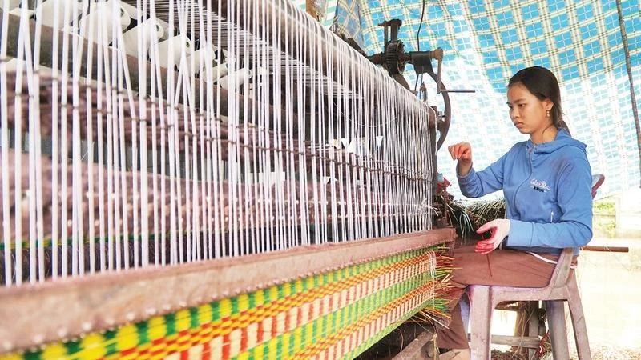
⚡
⚡
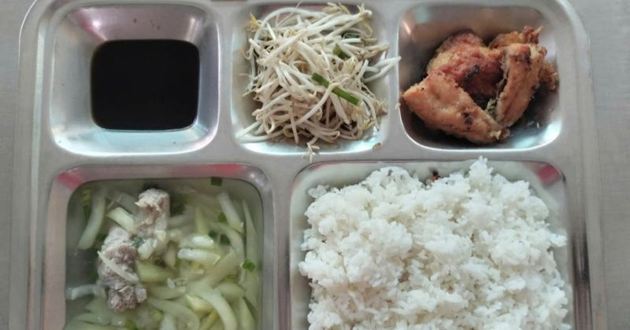
⚡TPHCM tăng kiểm soát thức ăn học đường, phụ huynh được tham gia giám sát
(Dân trí) - Ngày 7/10, Sở An toàn thực phẩm TPHCM cho biết đang tập trung triển khai các giải pháp kiểm soát xuyên suốt chất lượng thức ăn học đường, sau các phản ánh về chất lượng bữa ăn bán trú đầu năm học. Theo đó, ti
⚡
TP.HCM phê duyệt kiến trúc Bệnh viện Đa khoa thực hành 500 giường hơn 4.700 tỉ đồng
Bệnh viện Đa khoa thực hành 500 giường nằm trong khu Campus y tế đầu tiên của Việt Nam, đúng tiêu chuẩn kiểu mẫu của các nước có nền y tế phát triển trên thế giới (đó chính là Cụm y tế Tân Kiên) thuộc xã Tân Nh
⚡
⚡
⚡
⚡
Chủ nhà Asiad 20 đáp trả VĐV Thái Lan: 'Than phiền quá đáng, đừng đặt chân đến Nhật Bản nữa'
Vụ việc bắt nguồn từ bài đăng tố suất ăn nghèo nàn của một tuyển thủ teqball Thái Lan, khi người này chia sẻ bữa ăn chỉ vỏn vẹn cơm trắng ăn kèm một món mặn xào rau. Thông tin trên lập tức dấy lên làn sóng phản ứng tiêu
⚡
⚡
⚡
GPMB Quốc lộ 1A: Máy đếm tiền chạy hết công suất, người dân mang bao tải tiền về
Ngày 7/10, UBND phường Tương Mai tổ chức chi trả tiền bồi thường, hỗ trợ đợt 1 cho các hộ gia đình, cá nhân có đất nằm trong chỉ giới giải phóng mặt bằng Dự án Trục không gian Quốc lộ 1A gắn với tái thiết và chỉnh trang
⚡
Nghiên cứu mô hình tàu bệnh viện tại Phú Quốc, mở hướng kết hợp y tế và du lịch
Phó Thủ tướng Phạm Thị Thanh Trà làm việc với ông César Louis-Philip Marseille - Ảnh: chinhphu.vn/Thu Giang Cùng dự có Chủ tịch UBND tỉnh An Giang Hồ Văn Mừng; lãnh đạo các Bộ: Y tế; Ngoại giao; Tài chính; Văn hóa, Thể t
⚡
⚡
⚡
Sàn giao dịch nợ hiện đại của VAMC sẽ được nâng cấp, vận hành trong thời gian tới
VAMC đang tập trung nâng cấp Sàn giao dịch nợ theo hướng hiện đại, từng bước hình thành nền tảng kết nối thị trường, qua đó chuyển từ xử lý từng khoản nợ sang góp phần phát triển thị trường mua bán nợ. Ông Trần Trung Dũn
⚡
⚡
⚡
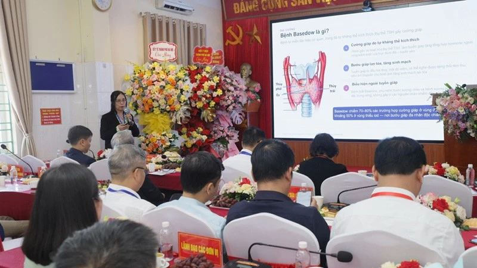
⚡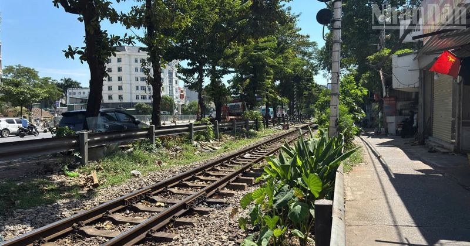
⚡[Ảnh] Hà Nội: Hiện trạng ngõ 1, ngõ 2 Đại Từ trước dự án mở rộng Quốc lộ 1A
Dự án đang được Hà Nội triển khai với chiều dài khoảng 36,3km, mặt cắt ngang dự kiến 90m. Theo phương án triển khai, đoạn tuyến qua địa bàn phường Định Công dài khoảng 1,49km, từ khu vực tim đường Vành đai 2,5 đến tim đư
⚡
Nobel Hóa học 2026 vinh danh nghiên cứu về hiệu ứng phi tuyến tính và tự xúc tác trong tổng hợp hữu cơ bất đối xứng
Chiều 7/10 (giờ Việt Nam), tại Stockholm, Viện Hàn lâm Khoa học Hoàng gia Thụy Điển đã công bố giải Nobel Hóa học năm 2026 thuộc về nhà khoa học Henri Kagan (Đại học Paris-Sud, Pháp) và nhà khoa học Kenso Soai (Đại học K
⚡
⚡
Phát động Phong trào “Mỗi người dân lựa chọn ít nhất một môn thể thao phù hợp để tập luyện thường xuyên”
Phát động Phong trào “Mỗi người dân lựa chọn ít nhất một môn thể thao phù hợp để tập luyện thường xuyên” Công điện gửi Bộ trưởng, Thủ trưởng cơ quan ngang Bộ; Chủ tịch Ủy ban nhân dân các tỉnh, thành phố; Ủy ban Trung ươ
⚡
Quan hệ Việt Nam-Lào: Từ "đoàn kết đặc biệt" đến "gắn kết chiến lược" trong kỷ nguyên mới
Facebook Twitter Lưu bài viết Bản in Copy link Theo phóng viên TTXVN tại Lào, ngay trước thềm chuyến thăm chính thức của Thủ tướng Việt Nam Lê Minh Hưng tới Lào từ ngày 8-9/10, Hãng Thông tấn quốc gia Lào ngày 7/10 đã đă
⚡
Chương trình nghệ thuật kể chuyện tình người Thái bằng nhạc vũ kịch đương đại
Facebook Twitter Lưu bài viết Bản in Copy link Lễ hội Văn hóa, Du lịch Mường Lò năm 2026 với chủ đề “Tinh hoa Xòe Thái - Sắc màu Tây Bắc” (Nghĩa Lộ, Lào Cai) sẽ diễn ra từ ngày 15-21/10, gắn với kỷ niệm 5 năm Nghệ thuật
⚡
⚡
Thành phố Hồ Chí Minh: Trạm y tế sẽ có bệnh viện đồng hành, hỗ trợ chuyên môn
Facebook Twitter Lưu bài viết Bản in Copy link “Mỗi trạm y tế sẽ có một bệnh viện đa khoa và nhiều bệnh viện chuyên khoa đồng hành, hỗ trợ chuyên môn và nâng cao năng lực điều trị, quản lý sức khỏe cho người dân tại địa
⚡
Bộ Công Thương thông tin về tiến trình đàm phán Hiệp định thương mại đối ứng với Hoa Kỳ
Hai bên cơ bản đã hoàn tất gần như các nội dung đàm phán, chỉ còn một số ít vấn đề cần trao đổi, làm rõ thêm về kỹ thuật Chiều 7/10, tại họp báo thường kỳ, thông tin về tiến trình đàm phán Hiệp địn
⚡
⚡
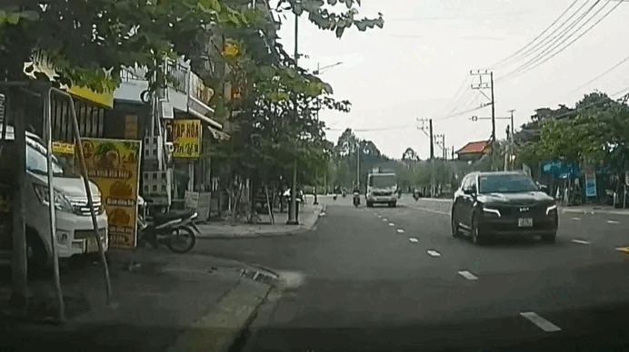
⚡
⚡
⚡
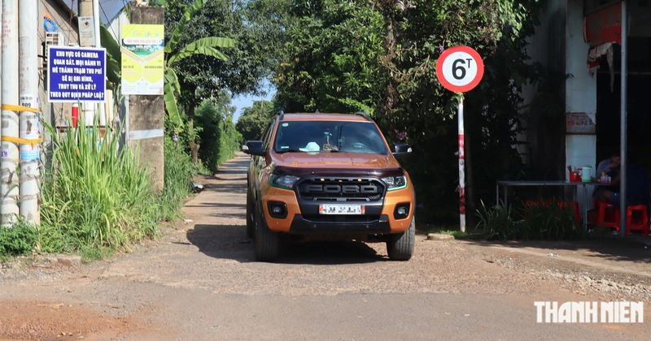
⚡Bảng thông báo 'né trạm thu phí sẽ bị ghi hình, truy thu' khiến tài xế hoang mang
Những ngày gần đây, bảng thông báo với nội dung "Khu vực có camera quan sát, mọi hành vi né trạm thu phí sẽ bị ghi hình, truy thu và xử lý theo quy định pháp luật" được cắm ở đầu 2 tuyến đường dân sinh gần trạm thu phí s
⚡
 ⚡
⚡
⚡
Cận cảnh dự án khiến 'Bầu Đoan' cùng loạt quan chức Thanh Hóa bị đề nghị truy tố
Cận cảnh dự án khiến 'Bầu Đoan' cùng loạt quan chức Thanh Hóa bị đề nghị truy tố Theo Hoàng Phúc | 07/10/2026 18:15 PM | Kinh doanh Theo dõi Cafebiz.vn trên TPO - Ông Cao Tiến Đoan “tức Bầu Đoan" - Giám đốc Công ty TNHH
Việt Nam được vinh danh tại 10 hạng mục Giải thưởng Công nghệ số và Trí tuệ nhân tạo ASOCIO 2026
Kết quả cho thấy, AI đang từng bước được đưa vào các lĩnh vực thiết yếu, từ quản trị nhà nước, giáo dục, y tế, tài chính đến an ninh mạng và chuỗi cung ứng. Năm 2026 là năm đầu tiên ASOCIO tổ chức hệ thống giải thưởng AI
Thành phố Hồ Chí Minh bắt đầu chi trả 450 tỷ đồng bồi thường cho dự án Tỉnh lộ 991 nối dài
Sáng 7/10, Ban Quản lý dự án đầu tư xây dựng phường Phú Mỹ phối hợp cùng các đơn vị chức năng đã bắt đầu tổ chức chi trả tiền bồi thường, hỗ trợ và tái định cư cho các hộ gia đình, cá nhân có đất bị thu hồi phục vụ dự án
Chính phủ đôn đốc hoàn thành việc sắp xếp, tinh gọn tổ chức bộ máy các bộ, cơ quan
Thủ tướng Chính phủ Lê Minh Hưng thay mặt Chính phủ ký ban hành Nghị quyết Phiên họp Chính phủ thường kỳ tháng 9 năm 2026 và Hội nghị trực tuyến Chính phủ với địa phương. Nghị quyết nêu rõ, tăng trưởng kinh tế (GDP) quý
Chuyên gia quốc tế hiến kế để TP. Hồ Chí Minh gọi 2,2 triệu tỷ đồng cho hạ tầng
Khoảng 2,2 triệu tỷ đồng vốn đầu tư hạ tầng giai đoạn 2026–2030 chưa được ngân sách đáp ứng đang đặt ra yêu cầu đa dạng hóa nguồn lực. Các chuyên gia IFC và đối tác quốc tế đã đưa ra khuyến nghị về dự án, năng lực tài ch
Nghị quyết Phiên họp Chính phủ thường kỳ tháng 9 và Hội nghị trực tuyến Chính phủ với địa phương
Ngày 3/10/2026, Thủ tướng Chính phủ Lê Minh Hưng chủ trì phiên họp Chính phủ thường kỳ tháng 9/2026 và trực tuyến với các bộ ngành, địa phương - Ảnh: VGP Tăng trưởng GDP 9 tháng ước đạt 9,01% Về kết quả thực hiện nhiệm v
Thông cáo báo chí về ngày làm việc thứ ba Hội nghị lần thứ tư Ban Chấp hành Trung ương Đảng khoá XIV
Phiên Khai mạc Hội nghị lần thứ tư Ban Chấp hành Trung ương Đảng khóa XIV, ngày 05/10/2026 - Ảnh: chinhphu.vn/Nhật Bắc Buổi sáng, đồng chí Thường trực Ban Bí thư Trần Cẩm Tú điều hành Hội nghị. Trung ương và các đại biểu
‘Đóng cửa’ quốc lộ 14D với xe tải lớn: Doanh nghiệp lo đứt tuyến vận tải Việt - Lào
Cần có phương án phù hợp Mới đây, Sở Xây dựng thành phố Đà Nẵng thông báo cấm xe ô tô tải từ 4 trục trở lên lưu thông trên quốc lộ 14D trong thời gian thi công dự án cải tạo, nâng cấp tuyến đường; bắt đầu từ 0 giờ ngày 1
🔥
🔥
Giá vàng miếng, vàng nhẫn trơn chiều 7/10 đồng loạt giảm tại SJC, DOJI, Bảo Tín Mạnh Hải, PNJ...
TIN MỚI Chiều 7/10, giá vàng trong nước giảm tại nhiều thương hiệu so với đầu ngày. Ở vàng miếng, SJC, DOJI, Bảo Tín Mạnh Hải, PNJ giảm 500.000 đồng/lượng ở cả chiều mua và bán, xuống 140-143 triệu đồng/lượng. Phú Quý gi
🔥
🔥
Tài chính doanh nghiệp 24/7: Masan đăng ký tăng sở hữu tại MCH, Thadico được thuê hơn 701 ha đất
Bản tin Tài chính doanh nghiệp 24/7 ngày 7/10 ghi nhận kế hoạch tăng sở hữu tại Masan Consumer, phương án chuyển đổi trái phiếu của Novaland, kết quả kinh doanh 9 tháng của VRG cùng các hoạt động đầu tư, giao đất, hợp tá
🔥
Thị trường chứng khoán phái sinh tháng 9/2026: VN30 giảm 4,27%, VN100 tăng 3,9 lần
Thị trường chứng khoán phái sinh tháng 9/2026 ghi nhận giao dịch VN30 giảm nhẹ, trong khi hợp đồng tương lai VN100 tăng mạnh. Cùng thời gian, thị trường các-bon tiếp tục phát sinh giao dịch, với hạn ngạch phát thải đạt 1
🔥
🔥
🔥
🔥
Campuchia bắt đầu xuất khẩu gạo trực tiếp đến Philippines bằng đường biển
Ảnh minh họa: Liên đoàn Lúa gạo Campuchia Tờ Khmer Times ngày 6/10 đưa tin, lô hàng 20.000 tấn gạo Campuchia có trị giá hơn 10 triệu USD, đang được vận chuyển từ Cảng đa năng Kampot (tỉnh Kampot, Campuchia) đến 4 cảng củ
🔥
🔥
Giỏi quá cũng chết: Cả đội coder Trung Quốc bị đuổi vì giảm chi phí từ 800 tỷ xuống còn 8 tỷ cho công ty
Giỏi quá cũng chết: Cả đội coder Trung Quốc bị đuổi vì giảm chi phí từ 800 tỷ xuống còn 8 tỷ cho công ty Long Văn | 07/10/2026 10:00 AM | Sống Theo dõi Cafebiz.vn trên Cuối tháng 9/2026, blogger tài chính Weibo Kim Sơn n
🔥
VIB Smart Ring, powered by Many Touches: Trải nghiệm thanh toán từ chiếc ví lên ngón tay
Với định hướng lấy công nghệ làm trung tâm để mở rộng cách ngân hàng hiện diện trong đời sống khách hàng một cách tiện lợi và đơn giản nhất, VIB ra mắt VIB Smart Ring, powered by Many Touches - mở rộng trải nghiệm thanh
🔥
 🔥
🔥
5 người phụ nữ Việt Nam quyền lực nhất châu Á tạo ra hơn nửa triệu tỷ doanh thu một năm và 444.000 việc làm cho lao động toàn cầu
5 người phụ nữ Việt Nam quyền lực nhất châu Á tạo ra hơn nửa triệu tỷ doanh thu một năm và 444.000 việc làm cho lao động toàn cầu Theo Yên Chi | 07/10/2026 06:59 AM | Kinh doanh Theo dõi Cafebiz.vn trên 5 nữ doanh nhân V
🔥
🔥
🔥
🔥
 🔥
🔥
🔥
🔥
🔥
🔥
Một tín hiệu quen thuộc từng xuất hiện gần 2 nhịp tạo đáy của VN-Index đang trở lại
TIN MỚI Trong khoảng một tháng gần đây, hàng chục triệu cổ phiếu đã được các lãnh đạo doanh nghiệp và người nội bộ/có liên quan đăng ký mua vào. Ông Trần Vũ Minh - con trai Chủ tịch Hòa Phát Trần Đình Long đăng ký mua tớ
⚡
⚡
"Kết nối yêu thương" huy động gần 60 tỷ đồng hỗ trợ phụ nữ, trẻ em mắc bệnh hiểm nghèo
Chương trình Kết nối yêu thương là hoạt động được lãnh đạo Đảng, Nhà nước, Bộ Công an, Hội Liên hiệp Phụ nữ Việt Nam cùng các cơ quan, doanh nghiệp đặc biệt quan tâm Bộ Công an phối hợp với Trung ương Hội Liên hiệp Phụ n
⚡
Phó Thủ tướng Thường trực Chính phủ thúc tiến độ loạt dự án phục vụ APEC 2027
Phó Thủ tướng Thường trực Phạm Gia Túc lưu ý, Ban Chỉ đạo không làm thay chức năng quản lý Nhà nước của các bộ, ngành, địa phương và chủ đầu tư; không thay thế trách nhiệm của người đứng đầu. Lãnh đạo Chính phủ yêu cầu p
⚡
Cặp vợ chồng vay 2,28 tỷ đồng mua ô tô, mỗi tháng trả góp 45,6 triệu đồng
Cặp vợ chồng vay 2,28 tỷ đồng mua ô tô, mỗi tháng trả góp 45,6 triệu đồng Theo Ngọc Linh | 07/10/2026 20:00 PM | Sống Theo dõi Cafebiz.vn trên Khoản tiền trả góp và chi phí nuôi ô tô là con số không nhỏ. Vay tiền mua ô t
⚡
MoMo có "cú ăn ba" tại Better Choice Awards 2026: Đổi mới thanh toán số, xây dựng niềm tin người dùng và tạo giá trị cho cộng đồng thông qua công nghệ
Với chủ đề "Innovation Beyond Borders – Đổi mới sáng tạo vượt qua mọi biên giới", Ban tổ chức Better Choice Awards 2026 nhận định một đổi mới sáng tạo thực chất cần vượt qua ba phép thử: giải quyết nhu cầu có thật, đạt q
⚡
⚡
⚡
⚡
⚡
⚡
Vụ cựu Bộ trưởng Nguyễn Thị Kim Tiến: Tiếp tục kê biên nhiều tài sản, bất động sản
Bác kháng cáo giảm bồi thường Như Tiền Phong đưa tin, HĐXX phúc thẩm TAND Tối cao tại Hà Nội vừa chấp nhận một phần kháng cáo, giảm án cho cựu Bộ trưởng Bộ Y tế Nguyễn Thị Kim Tiến từ 6 năm xuống 3 năm tù về tội “Vi phạm
🔥
🔥
Công an đồng loạt khám xét khẩn cấp 12 địa điểm trong chuyên án đặc biệt lớn: Bắt Trần Minh Đức SN 1989
Công an đồng loạt khám xét khẩn cấp 12 địa điểm trong chuyên án đặc biệt lớn: Bắt Trần Minh Đức SN 1989 Theo Chi Chi | 07/10/2026 14:37 PM | Xã hội Theo dõi Cafebiz.vn trên Công an đã phá đường dây buôn bán hàng cấm đặc
🔥
Lào Cai: Khởi tố, bắt tạm giam nhóm đối tượng sản xuất, đăng tải video bạo lực
Facebook Twitter Lưu bài viết Bản in Copy link Ngày 7/10, Công an tỉnh Lào Cai thông tin, Cơ quan Cảnh sát điều tra Công an tỉnh đã khởi tố, bắt tạm giam nhóm đối tượng sản xuất, đăng tải video bạo lực, gây ảnh hưởng xấu
🔥
🔥
Đổi mới công tác cán bộ: Đánh giá qua việc khó và trọng dụng bằng giao việc lớn
Facebook Twitter Lưu bài viết Bản in Copy link Tại phiên khai mạc Hội nghị lần thứ Tư Ban Chấp hành Trung ương Đảng khóa XIV, Tổng Bí thư, Chủ tịch nước Tô Lâm đã gợi mở 4 trọng tâm mà Hội nghị Trung ương 4 cần tập trung
🔥
🔥
🔥
Hoang phí khó tin: Loạt nhà phố giá chục tỷ đồng nhưng không có ai đến ở
Hoang phí khó tin: Loạt nhà phố giá chục tỷ đồng nhưng không có ai đến ở Quảng Định | 07/10/2026 13:35 PM | Kinh doanh Theo dõi Cafebiz.vn trên Giá địa ốc đắt đỏ nhưng ai ngờ rằng, có những khu đô thị đã được khởi công x
🔥
Phát huy vai trò của giới luật gia trong đổi mới xây dựng và thi hành pháp luật
Bà Bùi Thị Minh Hoài, Ủy viên Bộ Chính trị, Bí thư Trung ương Đảng, Chủ tịch Ủy ban Trung ương MTTQ Việt Nam và các đại biểu dự Đại hội - Ảnh: chinhphu.vn/Toàn Thắng Ngày 7/10, tại Hà Nội, Đại hội đại biểu toàn quốc Hội
🔥
🔥
Vụ thảm án ở Đồng Nai: Bị cáo không còn tiền, cha mẹ có phải bồi thường thay?
Ngày 6.10, TAND TP.Đồng Nai xét xử sơ thẩm và đã tuyên án đối với bị cáo trong vụ thảm án ở Đồng Nai . Theo đó, tòa tuyên phạt Nguyễn Đức Anh (21 tuổi) 6 năm tù về tội "sử dụng trái phép vũ khí quân dụng", tử hình về tội
🔥
Tạm giam 3 bị can trong vụ mua bán người dưới 16 tuổi, giam giữ nữ nhân viên trong container
Cơ quan Cảnh sát điều tra ra quyết định khởi tố vụ án, khởi tố bị can và lệnh bắt bị can để tạm giam. Ảnh: Công an tỉnh Thanh Hóa Ngày 7-10, Công an tỉnh Thanh Hóa thông tin, Cơ quan Cảnh sát điều tra đã khởi tố vụ án, k
🔥
INFOGRAPHIC: Huy động nguồn lực tài chính, mở rộng dư địa phát triển quốc gia biển mạnh
Chương trình hành động của Đảng bộ Bộ Tài chính thực hiện Nghị quyết số 20 - NQ/TW đặt trọng tâm huy động, phân bổ sử dụng hiệu quả nguồn lực, tạo nền tảng phát triển kinh tế biển nhanh, bền vững. Các mục tiêu đến năm 20
🔥
Vụ thảm sát ở Đồng Nai: 1,13 tỉ tiền bồi thường và ánh mắt bị cáo tìm kiếm người thân
Nguyễn Đức Anh quay xuống tìm kiếm người thân - Ảnh: A LỘC Phiên tòa hôm qua quá đông đảo người theo dõi, sự "đặc biệt" này không ai mong muốn, tràn ngập nỗi buồn và sự tức giận. Cộng đồng mạng bàn tán ánh mắt bị cáo qua
🔥
VIB đạt giải thưởng ngân hàng bán lẻ tiêu biểu, dẫn đầu xu thế cá nhân hóa
VIB vừa được vinh danh “Ngân hàng bán lẻ tiêu biểu 2026” tại Vietnam Banking Awards. Gần một thập kỷ chuyển đổi đã đưa lựa chọn chiến lược thành tăng trưởng vượt trội, vị thế trong lĩnh vực ngân hàng giao dịch như Top 3
🔥
Nhà phố của ông Đặng Lê Nguyên Vũ mở bán đợt mới: Chỉ từ 9 tỷ đồng, thanh toán trong 24 tháng, hỗ trợ vay ngân hàng tới 70%
Ông Đặng Lê Nguyên Vũ đi bán nhà: Liền kề giá từ 9 tỷ đồng/căn, thanh toán trong 24 tháng, hỗ trợ vay ngân hàng tới 70% Phan Trang | 07/10/2026 10:36 AM | Kinh doanh Theo dõi Cafebiz.vn trên Các quỹ căn tại Thành phố Cà
🔥
🔥
Đề xuất quy định về thu giữ và lưu trữ carbon gắn với hoạt động dầu khí
Bộ Công Thương đề xuất quy định về hoạt động thu giữ và lưu trữ carbon gắn với hoạt động dầu khí Bộ Công Thương cho biết, hoạt động CCS gắn với hoạt động dầu khí là nội dung mới so với Nghị định số 45/2023/NĐ-CP . Các qu
🔥
Thảm án ở Đồng Nai: Bị cáo không còn khả năng, cha mẹ có thay con bồi thường?
Thảm án ở Đồng Nai: Bị cáo không còn khả năng, cha mẹ có thay con bồi thường? Theo Nguyễn Tiến - Văn Quân | 07/10/2026 08:53 AM | Xã hội Theo dõi Cafebiz.vn trên Sau khi Nguyễn Đức Anh (21 tuổi, phường Hố Nai, Đồng Nai)
🔥
🔥
🔥
🔥
Năm thăng hoa của bà Phạm Thu Hương: Trở thành tỷ phú USD, lọt top những người phụ nữ quyền lực nhất châu Á
Năm thăng hoa của bà Phạm Thu Hương: Trở thành tỷ phú USD, lọt top những người phụ nữ quyền lực nhất châu Á Theo Hà Linh | 07/10/2026 08:15 AM | Kinh doanh Theo dõi Cafebiz.vn trên Cùng quá trình Vingroup mở rộng quy mô,
🔥
Nữ nhân viên ngân hàng chuyển khoản hơn 1,7 tỷ đồng cho Nguyễn Viết Hoàng: Công an và BIDV xác minh giao dịch
TIN MỚI Mới đây, Công an tỉnh Hà Tĩnh đã kịp thời hỗ trợ một công dân trên địa bàn hoàn trả lại hơn 1,7 tỷ đồng do chuyển khoản nhầm. Anh Nguyễn Viết Hoàng đã chuyển trả toàn bộ số tiền cho người chuyển nhầm. Ảnh: Công a
🔥
🔥
Quảng Ninh ‘trảm’ các công trình nuôi trồng, khai thác thủy sản trái phép
Tham gia đợt ra quân theo chủ trương của Thành phố có công an, quân sự, Đồn Biên phòng Bắc Sơn cùng các đơn vị chuyên môn và đại diện khu phố. Các lực lượng được phân công kiểm tra, bảo đảm an ninh, trật tự và trực tiếp
🔥
Từ nay đến hết năm, toàn bộ người dân có Sổ đỏ ở Hà Nội cần lưu ý thông tin sau, đặc biệt những ai có nhà, đất bị thu hồi một phần để GPMB
TIN MỚI UBND TP Hà Nội vừa phê duyệt đề án "Sổ đỏ trao tay", nhằm cải cách quy trình giải quyết thủ tục đất đai, giảm các bước trung gian, thao tác thủ công và số lần người dân phải trực tiếp đến cơ quan hành chính. Đề á
🔥
🔥
Xúc động với tình mẫu tử của thí sinh trẻ nhất vào chung kết Sao Mai 2026
Giọng ca lai nổi bật ở Sao Mai 2026 Chị Nguyễn Thị Yến - mẹ của Kim Jae Bin kể khi con trai mới 1 tuổi đã thấy bé cầm điều khiển làm micro nhún nhảy theo tivi, cũng từ đó chị phát hiện ra con mình có năng khiếu và đam mê
🔥
🔥
🔥
Không muốn “chờ NATO đến”, một thành viên điều quân chủ lực sát biên giới Nga: Điện Kremlin phản ứng sao?
TIN MỚI Tờ The Moscow Times đưa tin, Điện Kremlin ngày 5/10 tuyên bố các cơ quan tình báo Nga có khả năng giám sát các hoạt động quân sự dọc biên giới nước này, bác bỏ các báo cáo cho rằng Estonia đang điều động quân đội
🔥
Hành trình 4 năm người trẻ hình thành thói quen thu gom và tái chế chai nhựa
Sự thay đổi từ thói quen nhỏ Nếu như vài năm trước, việc phân loại một chai nhựa sau khi sử dụng vẫn còn mang lại cảm giác ngần ngại hoặc bị xem như một nghĩa vụ môi trường xa vời, thì nay, hình ảnh các bạn trẻ chủ động
🔥
🔥
🔥
🔥
[Video] Rà soát kiểm tra các cầu yếu và công trình vượt sông có nguy cơ bị sạt lở, hư hỏng do mưa lũ
Theo chỉ đạo, các cơ quan chuyên trách phải chủ động phối hợp với các đơn vị quản lý, vận hành hồ đập và nhà máy thủy điện để nắm bắt kịp thời phương án xả lũ, quy định thời gian xả sớm cũng như công tác xả dự phòng trướ
🔥
🔥
🔥
🔥
🔥
 🔥
🔥
🔥
🔥
🔥
🔥
Tài xế taxi kể hành trình cứu bé gái 14 tuổi thoát bẫy lừa của "bạn trai"
(Dân trí) - Tài xế taxi phát hiện bé gái 14 tuổi có ý định đi khoảng 450km ra Phú Thọ gặp người quen qua mạng với nhiều dấu hiệu bất thường. Anh kiểm tra thông tin rồi đưa bé đến công an để gia đình đón về. Anh Dương Đìn
🔥
🔥
🔥
🔥
🔥
🔥
UBCKNN đang nghiên cứu giao dịch chứng khoán xuyên trưa, nới biên độ giá
TIN MỚI Tại họp báo quý 3/2026 của Bộ Tài chính, Phó Chủ tịch Ủy ban Chứng khoán Nhà nước (UBCKNN) Hoàng Văn Thu cho biết cơ quan này đang nghiên cứu hoàn thiện cơ chế tổ chức và giao dịch trên thị trường nhằm nâng cao h
🔥
Thảm án ở Đồng Nai: Bị cáo không còn khả năng, cha mẹ có thay con bồi thường?
Ngày 6/10, TAND TP Đồng Nai tuyên phạt Nguyễn Đức Anh 6 năm tù về tội Sử dụng trái phép vũ khí quân dụng và tử hình về tội Giết người . Tổng hợp hình phạt, bị cáo phải chấp hành án là tử hình. Về trách nhiệm dân sự, HĐXX
🔥
Tin tức quốc tế ngày 7.10: Tình trạng nữ tử tù bị tiêm thuốc độc không chết
Nử tử tù bị tiêm thuốc độc không chết đã tỉnh, có thể nói chuyện Nữ tử tù Christa Pike, người sống sót sau vụ hành quyết bất thành tại nhà tù Mỹ tuần trước hiện đã tỉnh táo và có thể nói chuyện, tuy nhiên tiên lượng về t
🔥
🔥
🔥
Từ "Tìm người tài đức" đến thu hút, trọng dụng nhân tài trong giai đoạn mới
Ngày 20/11/1946, trên Báo Cứu quốc số 411, giữa lúc chính quyền cách mạng còn rất non trẻ, Chủ tịch Hồ Chí Minh công bố bài viết "Tìm người tài đức". Người viết: "Nước nhà cần phải kiến thiết. Kiến thiết cần phải có nhân
🔥
🔥
Tăng tốc thi công Vành đai 3 đoạn trên cao, hướng đến thông xe vào tháng 11
Trên công trường Vành đai 3 TP.HCM, đoạn trên cao phía đông đi qua các khu đô thị thuộc thành phố Thủ Đức (cũ) đang bước vào giai đoạn hoàn thiện các hạng mục cuối cùng. Từ trên cao, cầu cạn Vành đai 3 dài 14,7 km đã hiệ
🔥
🔥
🔥
🔥
Thành phố Quảng Ninh đứng thứ 4 về Chỉ số đổi mới sáng tạo cấp địa phương năm 2026
Kết quả đánh giá cung cấp cơ sở để từng địa phương nhận diện rõ hơn năng lực đổi mới sáng tạo, những lợi thế và các yếu tố cần tiếp tục cải thiện trong quá trình phát triển kinh tế-xã hội. Bên cạnh vị trí thứ 4 về điểm s
🔥
🔥
🔥
🔥
Ngay tại Hà Nội từng có một ngọn núi lửa hoạt động cách đây gần 200 triệu năm, nay thành Vườn quốc gia hút khách săn mây, tương lai có đường rộng 100m kết nối thẳng tới trung tâm
TIN MỚI Ít người biết Vườn quốc gia Ba Vì, một trong những điểm đến nổi tiếng của Hà Nội, nằm trên tàn tích của một ngọn núi lửa cổ. Ngọn núi lửa này được cho là đã ngừng hoạt động từ gần 200 triệu năm trước và hiện khôn
🔥
🔥
⚡
⚡
⚡
Cựu viện trưởng và hơn 40 nhân viên Viện Pháp y tâm thần Trung ương lãnh án
Chiều 7.10, sau nhiều ngày xét xử và nghị án, TAND TP.Hà Nội tuyên án đối với 65 bị cáo trong vụ đưa, nhận hối lộ, "chạy" bệnh án tâm thần tại Viện Pháp y tâm thần Trung ương . Có đến hơn 40 bị cáo là cựu lãnh đạo, bác s
Chuyên gia Liên Hiệp Quốc: Cảnh sát gìn giữ hòa bình Việt Nam 'đã đạt chuẩn'
Ngày 7.10, tại Trung tâm Đào tạo và Phát triển năng lực gìn giữ Hòa Bình Bộ Công an (xã Hoàng Hoa Thám, Hưng Yên), đơn vị Cảnh sát gìn giữ Hòa Bình số 1 của Bộ Công an tổ chức diễn tập chiến thuật chính thức trong khuôn

Bộ Nông nghiệp - Môi trường đề xuất xử lý 264 văn bản, chuyển từ “tiền kiểm” sang “hậu kiểm”
Sản xuất nông nghiệp công nghệ cao là một trong các lĩnh vực được hưởng lợi khi nhiều văn bản được điều chỉnh theo hướng cắt giảm, đơn giản hóa điều kiện đầu tư kinh doanh. Ảnh: SGGP Ngày 7-10, Bộ Tư pháp cho biết, theo
An Giang đề xuất hỗ trợ cán bộ bị ảnh hưởng do thay đổi nơi làm việc sau sắp xếp đơn vị hành chính
Phó Chủ tịch Thường trực UBND tỉnh An Giang Nguyễn Thanh Phong phát biểu tại phiên họp - Ảnh: An Lâm Ngày 7/10, UBND tỉnh An Giang họp, xem xét phương án chính sách hỗ trợ cán bộ sau sắp xếp đơn vị hành chính cùng một số
Shark Bình liên quan thế nào trong đường dây lừa đảo gần 1.600 tỷ đồng của "ông trùm" Mr Pips?
Shark Bình liên quan thế nào trong đường dây lừa đảo gần 1.600 tỷ đồng của "ông trùm" Mr Pips? Theo Minh Tuệ | 07/10/2026 16:33 PM | Xã hội Theo dõi Cafebiz.vn trên Ông Nguyễn Hòa Bình (Shark Bình), Chủ tịch HĐQT Tập đoà
Ngày 15-10, Thủ tướng sẽ đối thoại với thanh niên về khởi nghiệp, chuyển đổi số và tạo việc làm
Thủ tướng Lê Minh Hưng chụp ảnh chung với các sinh viên bên lề sự kiện lễ đón chính thức Thủ tướng Lào ngày 7-6 tại trụ sở Chính phủ - Ảnh: NGUYỄN KHÁNH Dự kiến ngày 15-10 tại Hà Nội, Thủ tướng Chính phủ Lê Minh Hưng và
Hướng đến APEC 2027: Sân bay Gia Bình và bài toán hạ tầng mang tầm quốc gia
6 tháng trước APEC 2027: Từ công trường đến năng lực vận hành Giai đoạn đầu tiên của Cảng hàng không quốc tế Gia Bình tập trung vào các hạng mục trọng yếu phục vụ APEC gồm khu bay, Nhà khách VIP, tháp kiểm soát không lưu
Công an phát thông báo quan trọng tới tất cả người dân có nhà cho thuê, cho mượn, cho ở nhờ
Công an phát thông báo quan trọng tới tất cả người dân có nhà cho thuê, cho mượn, cho ở nhờ Theo Đại Phú | 07/10/2026 15:51 PM | Xã hội Theo dõi Cafebiz.vn trên Tất cả người dân có nhà cho cho thuê, cho mượn, cho ở nhờ c
Bảo vệ 69 tuổi Viện Pháp y tâm thần nhận 400.000 đồng, vì sao bị đề nghị 3-4 năm tù?
Đại diện Viện kiểm sát giữ quyền công tố tại phiên tòa xét xử nhóm bác sĩ, điều dưỡng Viện Pháp y tâm thần Trung ương - Ảnh: G.L. Trong số 65 bị cáo lãnh án chiều nay, có hai cựu viện trưởng Trầ
Đẩy nhanh tiến độ dự án sân bay Long Thành và các tuyến giao thông phục vụ kết nối
Phó Thủ tướng Thường trực Chính phủ Phạm Gia Túc làm việc về tiến độ các dự án thành phần của Cảng hàng không quốc tế Long Thành ngày 4/10 Thông báo kết luận nêu rõ, dự án Cảng hàng không quốc tế Long Thành là dự án trọn
Sản xuất, thương mại duy trì đà tăng, tạo nền tảng tăng tốc trong quý IV/2026
Sản xuất công nghiệp tăng tốc qua từng quý, thị trường trong nước tiếp tục là bệ đỡ, xuất nhập khẩu duy trì mức tăng cao và an ninh năng lượng được bảo đảm là những điểm sáng của ngành Công Thương trong 9 tháng năm 2026.
SACOMBANK được vinh danh Thương hiệu Mạnh 2026: Vững nội lực, kiến tạo giá trị bền vững
TIN MỚI Chương trình Thương hiệu Mạnh do Tạp chí Kinh tế Việt Nam - VnEconomy - Vietnam Economic Times khởi xướng, đã đồng hành cùng cộng đồng doanh nghiệp Việt Nam trong 23 năm qua, ghi nhận những thương hiệu có thành t
TP. Hồ Chí Minh khởi công 2 tuyến metro nối Tây Ninh, Bình Dương vào quý IV/2026
TP. Hồ Chí Minh chuẩn bị đầu tư 2 tuyến đường sắt đô thị kết nối về phía Đông Bắc (Metro Thủ Dầu Một - TP. Hồ Chí Minh) và Tây Bắc (Metro số 2 kéo dài đến ranh tỉnh Tây Ninh), với mục tiêu khởi công trong quý IV/2026.
Phát triển công nghiệp hỗ trợ - Bài 3: Từ những mắt xích riêng lẻ đến cả hệ sinh thái
Phòng thử nghiệm đa chức năng của SGS (Tập đoàn của Thụy Sĩ, có bề dày kinh nghiệm hơn 130 năm trong lĩnh vực giám định, thử nghiệm và chứng nhận) tại Hải Phòng - Ảnh: Báo Đầu tư Những năng lực doanh nghiệp khó tự đầu tư
Cao tốc Bến Lức – Long Thành mở dòng giao thương về Thanh Phú Centre Point
TIN MỚI Cao tốc thông xe, cửa ngõ phía Tây mở thêm hướng phát triển Từ 0h ngày 1/10, gần 58 km cao tốc Bến Lức – Long Thành chính thức được khai thác toàn tuyến, cho phép phương tiện di chuyển liên tục từ Tây Ninh tới Đồ
Hơn 8.500 người sánh bước cùng CapitaLand hỗ trợ trẻ em và thanh thiếu niên yếu thế tại Việt Nam
TIN MỚI Hưng Yên, ngày 5 tháng 10 năm 2026 – Bước sang năm thứ tư, chiến dịch "Bước chân Gắn kết Yêu Thương" do CapitaLand Development (CLD) Việt Nam khởi xướng thu hút hơn 8.500 người đồng hành, thành công đạt được 490
Một chủ nợ nước ngoài của Novaland đổi khoản nợ lấy cổ phiếu NVL với giá gây sốc
Một chủ nợ nước ngoài của Novaland đổi khoản nợ lấy cổ phiếu NVL với giá gây sốc Theo Mai Chi | 07/10/2026 07:43 AM | Kinh doanh Theo dõi Cafebiz.vn trên Mức giá chuyển đổi 34.000 đồng/cổ phiếu hiện cao hơn hơn 3 lần so

Chi Nhánh Công ty Cổ phần Sữa Việt Nam- Nhà máy Sữa Sài Gòn thông báo mời thầu
1. Chi Nhánh Công ty Cổ phần Sữa Việt Nam - Nhà máy Sữa Sài Gòn có kế hoạch tổ chức đấu thầu theo hình thức đấu thầu rộng rãi gói thầu như sau: Gói thầu số 01: Cung cấp lắp đặt hệ thống máy thổi chai Probi 130ml HDPE (SG
Ít ngày nữa, Hà Nội sẽ khởi công siêu dự án hơn 75.000 tỷ đồng cải tạo dòng sông ô nhiễm bậc nhất Thủ đô
Ít ngày nữa, Hà Nội sẽ khởi công siêu dự án hơn 75.000 tỷ đồng cải tạo dòng sông ô nhiễm bậc nhất Thủ đô Theo Văn Đoan | 07/10/2026 07:16 AM | Kinh doanh Theo dõi Cafebiz.vn trên Dự án cải tạo, nạo vét và xử lý ô nhiễm s
Những tuyến xe khách nào được đưa về bến Yên Sở sau Giáp Bát, Nước Ngầm?
Bến xe Yên Sở được đưa vào khai thác từ ngày 2/10. Cùng thời điểm, Hà Nội yêu cầu Bến xe Giáp Bát và Nước Ngầm tạm dừng tiếp nhận các tuyến xe khách liên tỉnh mới, trong khi các tuyến đang hoạt động tại hai bến này vẫn đ
Xã đặc biệt của Hà Nội mà ông Phạm Nhật Vượng muốn xây khu đô thị 460 ha: Thí điểm mô hình xã hội chủ nghĩa, lấy chỉ số hạnh phúc làm thước đo
TIN MỚI Vingroup dự kiến làm khu đô thị 460 ha tại xã Thư Lâm Chiều 2/10, UBND xã Thư Lâm phối hợp với Sở Xây dựng Hà Nội và Tập đoàn Vingroup - Công ty CP tổ chức hội nghị triển khai công tác giải phóng mặt bằng Dự án đ
5 người phụ nữ Việt Nam quyền lực nhất châu Á tạo ra hơn nửa triệu tỷ doanh thu một năm và 444.000 việc làm cho lao động toàn cầu
VIC&VNM&VGI&FRT&SBT: Giá hiện tại Thay đổi Xem hồ sơ doanh nghiệp TIN MỚI Tạp chí Fortune vừa công bố danh sách 100 phụ nữ quyền lực nhất châu Á năm 2026, trong đó xuất hiện 5 nữ lãnh đạo doanh nghiệp Việt Nam. Đứng cao
⚡
⚡
⚡
⚡
⚡
⚡
⚡
⚡
Phía sau những dòng “dư data, inbox booking” rộ lên trên Threads: Cơn sốt ảnh sao Việt và vùng xám của văn hóa người hâm mộ
Phía sau những dòng “dư data, inbox booking” rộ lên trên Threads: Cơn sốt ảnh sao Việt và vùng xám của văn hóa người hâm mộ Pa Dun | 07/10/2026 20:18 PM | Sống Theo dõi Cafebiz.vn trên Chỉ trong vài tháng, "booking data"
⚡
⚡
⚡
⚡
Khởi tố 4 bị can vụ thu trái phép 80 tỷ đồng tiền mua - thuê nhà ở xã hội
Bị can Lương Song Hào tại cơ quan điều tra. Ảnh: CÔNG AN CUNG CẤP Theo đó, các bị can bị khởi tố, gồm: Lương Song Hào (sinh năm 1983, trú tại phường Dương Nội, TP Hà Nội), Chủ tịch HĐTV Công ty TNHH Bánh kẹo Thăng Long (
⚡
⚡
⚡
⚡
⚡
Nữ sinh lớp 10 bị bắt quỳ, túm tóc, dí thuốc sát mặt: Chuyện gì xảy ra phía sau clip?
Em N.T.U.T., nạn nhân bị bạn hành hung chia sẻ lại sự việc. Ngày 7/10, PV Tiền Phong có cuộc trao đổi với em N.T.U.T., nữ sinh lớp 10A7, Trường THPT Cư M'gar (xã Quảng Phú, tỉnh Đắk Lắk), nạn nhân trong vụ việc bị bạn tú
⚡
⚡
⚡
⚡
⚡
⚡
⚡
Tuyên bố chung giữa nước Cộng hòa xã hội chủ nghĩa Việt Nam và Cộng hòa Panama
1. Nhận lời mời của Tổng Bí thư Ban Chấp hành Trung ương Đảng Cộng sản Việt Nam, Chủ tịch nước Cộng hòa xã hội chủ nghĩa Việt Nam Tô Lâm và Phu nhân, Tổng thống nước Cộng hòa Panama José Raúl Mulino Quintero và Phu nhân
⚡
Nhận 400.000 - 570.000 đồng mở cổng cho ‘bà trùm’, 4 bảo vệ Viện Pháp y tâm thần nhận án 2-3 năm tù
Hội đồng xét xử tuyên án phiên tòa vụ án tại Viện Pháp y tâm thần Trung ương - Ảnh: GIANG LONG Trong số hàng chục lãnh đạo, bác sĩ, điều dưỡng, nhân viên của Viện Pháp y tâm thần Trung ương bị tòa tuyên
⚡
MC SN 1987 từng dẫn Vì Bạn Xứng Đáng: Gia đình phá sản, làm đủ nghề giờ ở nhà 60 tỷ ở đảo Kim Cương
MC SN 1987 từng dẫn Vì Bạn Xứng Đáng: Gia đình phá sản, làm đủ nghề giờ ở nhà 60 tỷ ở đảo Kim Cương Theo Liên Hoa | 07/10/2026 19:24 PM | Sống Theo dõi Cafebiz.vn trên Sau nhiều năm lao động chăm chỉ, nam nghệ sĩ sở hữu
⚡
⚡
⚡
⚡
⚡
⚡
TikToker 'Thảo Ràn Ri' cho vay nặng lãi, thu lợi bất chính gần nửa tỉ đồng
Ngày 7.10, Công an tỉnh Sơn La cho biết, Phòng Cảnh sát hình sự Công an tỉnh Sơn La đã ra quyết định khởi tố vụ án hình sự, khởi tố bị can đối với TikToker "Thảo Ràn Ri" (tức Nguyễn Thị Thảo, 48 tuổi, trú P.Thảo Nguyên,
⚡
⚡
⚡
⚡
⚡
⚡
⚡
Biển Đông gió mạnh ngang áp thấp nhiệt đới, mưa lớn lan rộng ra miền Trung
Trung tâm Dự báo khí tượng thủy văn quốc gia cho biết, trong đêm 6 - 7.10, mưa lớn xảy ra tập trung ở khu vực từ Huế - Đà Nẵng và phía đông tỉnh Quảng Ngãi , với lượng mưa đo được phổ biến ở khoảng 50 - 100 mm. Riêng khu
⚡
Một cổ phiếu bốc đầu kịch trần trước ngày "phát" 900 tỷ đồng cho cổ đông
TIN MỚI Cổ phiếu KSV của Tổng Công ty Khoáng sản TKV - CTCP (Vimico) trở thành tâm điểm trong phiên 7/10 khi bật tăng hết biên độ. Thị giá KSV đóng cửa trong sắc tím, tăng 10% so với phiên trước lên 121.000 đồng/cp. Dòng
⚡
Tuyên bố chung giữa nước Cộng hòa Xã hội chủ nghĩa Việt Nam và Cộng hòa Panama
Tổng Bí thư, Chủ tịch nước Tô Lâm và Tổng thống Panama José Raúl Mulino - Ảnh: chinhphu.vn/Nhật Bắc 1. Nhận lời mời của Tổng Bí thư Ban Chấp hành Trung ương Đảng Cộng sản Việt Nam, Chủ tịch nước Cộng hòa xã hội chủ nghĩa
⚡
⚡
⚡
Nâng cao nhận thức về dữ liệu cá nhân trên không gian mạng trong kỷ nguyên mới
Facebook Twitter Lưu bài viết Bản in Copy link Ngày 7/10, tại Hà Nội, Nhà xuất bản Chính trị quốc gia Sự thật phối hợp với Học viện An ninh nhân dân, Bộ Công an tổ chức Lễ giới thiệu cuốn sách “ Dữ liệu cá nhân trên khôn
⚡
Chuỗi sự kiện nghệ thuật, học thuật nhìn lại hành trình phát triển của Jazz Việt
Facebook Twitter Lưu bài viết Bản in Copy link Hướng tới kỷ niệm 70 năm thành lập Học viện Âm nhạc Quốc gia Việt Nam, Khoa Jazz tổ chức chuỗi hoạt động nghệ thuật, học thuật và giao lưu quốc tế quy mô mang chủ đề "Jazz &
⚡
Thu 'tiền chênh' của gần 300 khách hàng, chủ tịch công ty và 3 người bị khởi tố
Ngày 7/10, Cơ quan Cảnh sát điều tra Công an TP Hà Nội cho biết đã khởi tố vụ án, khởi tố bị can và áp dụng biện pháp ngăn chặn đối với 4 bị can về tội Lạm dụng chức vụ, quyền hạn chiếm đoạt tài sản. Các bị can gồm Lương
⚡
⚡
⚡
⚡
 ⚡
⚡
⚡
Chỉ đạo, điều hành của Chính phủ, Thủ tướng Chính phủ ngày 07/10/2026 (1)
Nghị quyết Phiên họp Chính phủ thường kỳ tháng 9/2026 và Hội nghị trực tuyến Chính phủ với địa phương Thủ tướng Chính phủ Lê Minh Hưng thay mặt Chính phủ ký ban hành Nghị quyết số 312/NQ-CP ngày 5/10/2026 về Phiên họp Ch
Chung cư sắp được tính niên hạn sử dụng: GS Đặng Hùng Võ nói giá có thể giảm, dòng tiền sẽ đi đâu?
GS Đặng Hùng Võ dự đoán xu hướng giá nhà khi chung cư có thể sắp được tính niên hạn sử dụng, dòng tiền sẽ đi về đâu? Phan Trang | 07/10/2026 17:00 PM | Kinh doanh Theo dõi Cafebiz.vn trên Việc xác định rõ niên hạn sử dụn
Cổ phiếu PNJ ở mức thấp nhất 10 năm, lộ diện quỹ ngoại bán ròng 5 triệu cổ phiếu
Nhóm quỹ ngoại liên quan T. Rowe Price giảm mạnh sở hữu PNJ - Ảnh: QUANG ĐỊNH Cổ phiếu PNJ của Công ty CP Vàng bạc Đá quý Phú Nhuận tiếp tục lao dốc trong phiên 7-10, có lúc giảm sàn xuống 18.750 đồng trước khi đóng cửa
Shark Bình liên quan thế nào trong đường dây lừa đảo gần 1.600 tỷ đồng của "ông trùm" Mr Pips?
TIN MỚI Theo thông tin từ TAND TP Hà Nội, ngày 26/10, tòa sẽ mở phiên xét xử Phó Đức Nam (SN 1994, tức Mr Pips, ngụ TP.HCM), Lê Khắc Ngọ (SN 1990, tức Mr Hunter, ngụ Hưng Yên), Nguyễn Hòa Bình (SN 1981, tức Shark Bình, n
Một nhóm cổ phiếu bất ngờ “nổi sóng” giữa lúc VN-Index gặp khó, hàng loạt mã tím trần
TIN MỚI Thị trường chứng khoán Việt Nam phiên 7/10 ghi nhận diễn biến đáng chú ý khi dòng tiền tìm đến nhóm cổ phiếu khoáng sản giữa lúc chỉ số chung chịu áp lực. Khép lại phiên giao dịch, hàng loạt mã cổ phiếu thuộc nhó
Sửa Quy chuẩn 41: Đề xuất chỉ giới hạn tốc độ khu đông dân cư từ 5h30 đến 20h
Biển R.420 là báo hiệu "Bắt đầu khu đông dân cư" - Ảnh: T.N. Hiệp hội Vận tải ô tô Việt Nam vừa có văn bản góp ý về dự thảo thông tư ban hành và Quy chuẩn kỹ thuật quốc gia về báo hiệu đường bộ (QCVN 41:2026 sẽ thay thế
Phiên 7/10: Khối ngoại thẳng tay bán ròng hơn 900 tỷ đồng, cổ phiếu nào bị "xả" mạnh nhất?
TIN MỚI Chứng khoán Việt Nam diễn biến khá ảm đạm trong phiên 7/10 khi sắc đỏ bao trùm toàn bộ thời gian giao dịch. Giá trị khớp lệnh trên HoSE đạt vỏn vẹn 12.550 tỷ đồng. Giao dịch khối ngoại là điểm trừ khi bán ròng 94
Bài 3: Mở rộng diện bao phủ bảo hiểm xã hội đối với lao động trên nền tảng số
Định hướng thực hiện bảo hiểm xã hội toàn dân đã được Đảng, Nhà nước ta nhấn mạnh trong các chiến lược phát triển kinh tế – xã hội, coi đây là giải pháp để đảm bảo bao phủ an sinh xã hội bền vững. Tuy nhiên, với nhóm lao
Thuê xe người khác chạy dịch vụ rồi mang cầm cố, thanh niên nhận 24 năm tù
Bị cáo Hậu tại tòa - Ảnh: NHẪN NAM Ngày 7-10, Tòa án nhân dân TP Cần Thơ xét xử sơ thẩm đã tuyên phạt bị cáo Lý Minh Hậu (32 tuổi) 12 năm tù về tội lừa đảo chiếm đoạt tài sản (lừa cho thuê xe ô tô chạy dịch vụ) và 12 năm
Làn sóng thịt nhập siêu rẻ: Vì sao đi nửa vòng trái đất giá vẫn thấp hơn hàng nội?
Nhiều loại thịt nhập khẩu giá cao kèm chất lượng được bày bán tại siêu thị - Ảnh: THY NHUNG Thay vì nhìn vào các loại thịt nhập khẩu giá rẻ, chúng ta cũng cần có cái nhìn công bằng hơn về các loại thịt nhập khẩu khác nha
Bầu Đoan hứa gì mà cựu GĐ, phó GĐ Vietcombank Thanh Hóa chỉ đạo lập khống thư tín dụng 532 tỉ?
Công an tống đạt các quyết định tố tụng đối với bầu Đoan - Ảnh: CTV Dù hồ sơ doanh nghiệp không bảo đảm, một thư xác nhận cung ứng tín dụng hơn 532 tỉ đồng vẫn được phát hành ngay trong ngày. Cơ quan cảnh sát điều tra C
Hợp nhất Luật Ngân sách nhà nước và Đầu tư công: Tích hợp quy trình, nâng hiệu quả nguồn lực
Dự án Luật Ngân sách nhà nước (hợp nhất) tiếp tục được hoàn thiện theo hướng tích hợp các quy định của pháp luật về ngân sách và đầu tư công, đồng bộ quy trình, giảm chồng chéo và nâng hiệu quả sử dụng nguồn lực. Đây cũn
Giá vàng hôm nay 7.10.2026: ACB mua thấp, chênh lệch mua bán lên 5 triệu đồng/lượng
ACB tăng giá mua vàng miếng 500.000 đồng mỗi lượng, mức chênh lệch giữa giá mua và bán vàng là 5 triệu đồng/lượng, mua vào 137,8 triệu đồng, bán ra 142,8 triệu đồng. Giá mua vàng miếng SJC của ACB thấp hơn các công ty kh
Hết mì chính Ajinomoto, bồn cầu TOTO, giờ lại đến hãng sữa rửa mặt "quốc dân" ở Việt Nam khiến tất cả sững sờ
Hết mì chính Ajinomoto, bồn cầu TOTO, giờ lại đến hãng sữa rửa mặt "quốc dân" ở Việt Nam khiến tất cả sững sờ Theo Quốc Vinh | 07/10/2026 08:38 AM | Công nghệ Theo dõi Cafebiz.vn trên Từ hũ mì chính, cái bồn cầu đến chai
Đọc nhanh 7-10: S&P 500 lập đỉnh mới 7.800 điểm, GVR và Vinatex công bố kết quả 9 tháng
S&P 500 và Nasdaq Composite liên tục lập đỉnh mới - Ảnh: HỮU HẠNH Điểm nhanh chứng khoán thế giới Chốt phiên giao dịch chứng khoán 6-10, chỉ số S&P 500 tăng 0,58% lên 7.819 điểm, lần đầu tiên đóng cửa trên mốc 7.800 điểm
VIB Smart Ring, powered by Many Touches: Đưa trải nghiệm thanh toán từ chiếc ví lên ngón tay
TIN MỚI Với định hướng lấy công nghệ làm trung tâm để mở rộng cách ngân hàng hiện diện trong đời sống khách hàng một cách tiện lợi và đơn giản nhất, VIB ra mắt VIB Smart Ring, powered by Many Touches - mở rộng trải nghiệ
Sau 12 phiên giảm sàn liên tiếp, cổ phiếu Chủ tịch Kosy cuối cùng cũng khớp lệnh với số lượng bất ngờ
KOS: Giá hiện tại Thay đổi Xem hồ sơ doanh nghiệp TIN MỚI Theo báo cáo kết quả giao dịch gửi Ủy ban Chứng khoán Nhà nước và HoSE, ông Nguyễn Việt Cường, Chủ tịch HĐQT CTCP Kosy, đã bị công ty chứng khoán bán giải chấp 81
TP.HCM tạm điều chỉnh hành trình 13 tuyến xe buýt để thi công metro số 2
Trung tâm Quản lý giao thông công cộng TP.HCM thông báo tạm điều chỉnh hành trình của 13 tuyến xe buýt - Ảnh: NGỌC LÂN Trung tâm Quản lý giao thông công cộng TP.HCM cho biết việc điều chỉnh nhằm bảo đảm an toàn giao thôn
CSGT bắn tốc độ trên cao tốc: BMW phóng tới 132 km/giờ, hàng trăm xe vi phạm
Ngày 7.10, Đội CSGT đường bộ cao tốc số 6 (Phòng 6, Cục CSGT) cho biết đơn vị vừa ghi nhận nhiều ô tô chạy quá tốc độ trên cao tốc Vĩnh Hảo - Cam Lâm - Nha Trang, hướng từ Nha Trang đi Vĩnh Hảo. Tại vị trí CSGT kiểm soát
Đội tuyển Việt Nam: Thử nghiệm nhập tịch thất bại, bài học cho Asian Cup
Tuyển Việt Nam mất cân bằng vì nhập tịch ồ ạt “Tôi nghĩ mọi thứ luôn cần sự cân bằng. Ở những quốc gia hoặc giải đấu không thuộc nhóm hàng đầu, bạn cần có hệ thống đào tạo cầu thủ trẻ từ các học viện. Bên cạnh đó, các cầ

Chất bảo quản vượt ngưỡng 33 lần trong viên sủi giả nguy hiểm thế nào?: Trẻ em xuất hiện 6 triệu chứng cần đưa đến bệnh viện ngay
Chất bảo quản vượt ngưỡng 33 lần trong viên sủi giả nguy hiểm thế nào?: Trẻ em xuất hiện 6 triệu chứng cần đưa đến bệnh viện ngay Giả Hủ | 07/10/2026 12:15 PM | Xã hội Theo dõi Cafebiz.vn trên Xét nghiệm cho thấy, hơn 1,
Gỡ vướng trong đánh giá cấp xã, phường, đặc khu đạt chuẩn tiếp cận pháp luật
Các đại biểu tham dự tọa đàm - Ảnh: BTP Mới đây, tại phường Bắc Giang, TP Bắc Ninh, Bộ Tư pháp tổ chức Tọa đàm trao đổi, chia sẻ kinh nghiệm triển khai công tác đánh giá, công nhận xã, phường, đặc khu (cấp xã) đạt chuẩn
Apple có thật sự đưa màn hình cảm ứng lên MacBook Pro sau 16 năm phản đối?
16 năm sau khi Steve Jobs chê màn hình cảm ứng, Apple sắp đưa nó lên MacBook? Vũ Hoàng | 07/10/2026 11:29 AM | Công nghệ Theo dõi Cafebiz.vn trên Năm 2010, Steve Jobs từng bác bỏ ý tưởng đưa màn hình cảm ứng lên máy Mac
Hình thành hệ sinh thái học tập suốt đời thiết thực, hiệu quả, dễ tiếp cận
Phó Thủ tướng Chính phủ Lê Tiến Châu và các đại biểu tham dự Hội nghị - Ảnh: chinhphu.vn/Thu Sa Sáng 7/10, tại thủ đô Hà Nội, Phó Thủ tướng Chính phủ Lê Tiến Châu dự và phát biểu tại Hội nghị sơ kết 5 năm thực hiện các Q
Hơn 1000 cá heo, cá voi bất ngờ đổ bộ vùng biển Phú Quý khiến dân bản địa thảng thốt: “Từ nhỏ giờ mới gặp nhiều đến vậy”
Hơn 1000 cá heo, cá voi bất ngờ đổ bộ vùng biển Phú Quý khiến dân bản địa thảng thốt: “Từ nhỏ giờ mới gặp nhiều đến vậy” Theo Bích Ngọc | 07/10/2026 10:50 AM | Xã hội Theo dõi Cafebiz.vn trên Giữa vùng biển xanh ngắt của
Nữ lãnh đạo đầu tiên trong lĩnh vực nông nghiệp 2 năm liên tiếp nằm trong Bảng xếp hạng Fortune
Fortune vừa công bố danh sách 100 Phụ nữ có tầm ảnh hưởng nhất châu Á 2026 – Most Powerful Women Asia 2026, ghi nhận những nữ lãnh đạo có ảnh hưởng nổi bật trong cộng đồng kinh doanh khu vực. Đáng chú ý, trong danh sách
Nam MC sinh năm 1984 dẫn Chiếc nón kỳ diệu thay Tuấn Tú cách đây hơn 10 năm: Xuất thân là kỹ sư IT, nay sống kín tiếng, chưa lấy vợ, ít xuất hiện trên VTV
TIN MỚI Hơn 10 năm trước, khi MC Tuấn Tú nói lời chia tay Chiếc nón kỳ diệu sau 7 năm gắn bó, người được lựa chọn để tiếp quản vị trí dẫn chương trình là Danh Tùng. Trong số Tết Giáp Ngọ 2014, Tuấn Tú trực tiếp giới thiệ
Độc đáo những bờ đá trên các thửa ruộng bậc thang ở đảo tiền tiêu Lý Sơn
TIN MỚI Nhắc đến ruộng bậc thang, người ta thường nghĩ ngay đến vùng cao Tây Bắc. Thế nhưng, ít ai biết rằng, ngay giữa đảo tiền tiêu Lý Sơn, tỉnh Quảng Ngãi lại tồn tại một hệ thống ruộng bậc thang độc nhất vô nhị: Nhữn
Bộ Quốc phòng: Trường hợp không thuộc diện tạm hoãn gọi nhập ngũ thời bình
Bộ Quốc phòng vừa trả lời các kiến nghị của công dân về trường hợp tạm hoãn gọi nhập ngũ. Cụ thể, công dân hiện 23 tuổi, là sinh viên năm thứ 3 ngành Y khoa (chương trình đào tạo liên thông, hình thức chính quy, tập trun
Thuốc ho bổ phế Bảo Thanh đồng hành chăm sóc sức khỏe hô hấp người cao tuổi
(Dân trí) - Tiếp nối hành trình 20 năm phát huy tinh hoa Đông dược, chăm sóc sức khỏe hô hấp cho người Việt, thuốc ho bổ phế Bảo Thanh triển khai các hoạt động dành cho người cao tuổi, góp phần lan tỏa tinh thần chăm sóc
Từ chuyên gia đến quản lý: Khi năng lực chuyên môn không còn là lợi thế duy nhất
(Dân trí) - Thành công trong vai trò một chuyên gia là bước đệm quan trọng, nhưng không đồng nghĩa với việc sự nghiệp sẽ tự động bứt phá khi bước lên vị trí quản lý. Không ít nhân sự khi đứng trước cơ hội thăng tiến đã p
Vừa làm đôi mắt cho mẹ vừa bán cá kiếm sống, nữ sinh Vĩnh Long vẫn đậu đại học với 24,91 điểm
Từ nhiều năm qua, đặc biệt là sau thời gian cha qua đời, Phúc làm mọi việc nặng trong nhà để đỡ đần cho người mẹ bị khiếm thị - Ảnh: MẬU TRƯỜNG Cha qua đời, người mẹ khiếm thị băn khoăn có nên gửi con vào mái ấm? Gia đìn
Honda City 2026 nhận cọc ở Việt Nam: Dự kiến 2 bản, màn lớn, bỏ lốp dự phòng
Honda City mới đã được giới thiệu tại một số thị trường trước khi dự kiến mở bán ở Việt Nam - Ảnh: Honda Honda City mới bắt đầu nhận cọc tại đại lý Một số đại lý Honda tại Việt Nam đã bắt đầu nhận đặt cọc City phiên bản
Ronaldo đăng tâm thư 10 trang nói hết về mâu thuẫn với HLV Bồ Đào Nha, xác nhận chưa từ giã đội tuyển
TIN MỚI Những luồng thông tin trái chiều xung quanh tương lai của Cristiano Ronaldo ở cả cấp độ câu lạc bộ lẫn đội tuyển quốc gia vừa qua đã chính thức có lời giải đáp. Siêu sao 41 tuổi vừa đưa ra tuyên bố quan trọng khẳ
Bản án nào cho vợ chồng cựu Viện trưởng nhận tiền để ‘biến’ tội phạm thành người tâm thần?
Chiều nay (7/10), TAND TP Hà Nội sẽ tuyên án 65 bị cáo phạm tội “đưa, nhận hối lộ” xảy ra tại Viện Pháp y tâm thần Trung ương. Trong vụ án này, “bà trùm” Nguyễn Thị Mai Anh (SN 1979, có 7 tiền án tiền sự) được xác định g
The Collection 688 - Khi không gian sống linh hoạt theo từng nhịp sống đô thị
Một ngày không chỉ có một nhịp Có những buổi sáng bắt đầu bằng lịch trình dày đặc, những cuộc họp nối tiếp nhau và những quyết định cần được đưa ra nhanh chóng. Nhưng khi trở về nhà, con người có thể muốn trở thành một p
Tạo thêm xung lực để hợp tác giữa Việt Nam với Lào, Campuchia ngày càng thực chất, hiệu quả
Thứ trưởng Bộ Ngoại giao Nguyễn Mạnh Cường trả lời phỏng vấn báo chí Trước thềm chuyến thăm chính thức nước Cộng hòa Dân chủ Nhân dân Lào và Vương quốc Campuchia của Thủ tướng Chính phủ Lê Minh Hưng cùng Đoàn đại biểu cấ
Ronaldo tố cáo HLV nuốt lời, tuyên bố 'không bao giờ bỏ đội tuyển Bồ Đào Nha'
Theo lời kể của chân sút vĩ đại nhất lịch sử bóng đá Bồ Đào Nha , ban đầu đôi bên đã thống nhất một kế hoạch rõ ràng: Ronaldo sẽ không thi đấu ở hai lượt trận gặp Na Uy và Đan Mạch nhằm đảm bảo thể lực. Dẫu vậy, HLV Jesu
Vụ 10.000 tấn thịt heo nhiễm chất cấm: Nhiều hàng rào quản lý vẫn "bó tay"?
(Dân trí) - Người tiêu dùng không thể tự nhận biết thịt heo chọn mua hằng ngày có an toàn hay không, trong khi người chăn nuôi cũng đang “bất lực” trước vấn nạn chất cấm. Thịt heo có chất cấm: Không thể nhận biết bằng mắ
Phường Phương Liệt chi trả bồi thường, hỗ trợ, tái định cư Dự án Quốc lộ 1A cho 11 hộ dân đầu tiên
TIN MỚI Đây là những hộ dân đầu tiên nhận tiền bồi thường, hỗ trợ trong quá trình triển khai dự án trên địa bàn phường. 1 1 hộ dân đầu tiên nhận tiền bồi thường, hỗ trợ Theo phương án được phê duyệt, đợt 1, UBND phường P
Một mảng bảo hiểm tăng trưởng mạnh, doanh thu 8 tháng 2026 gần gấp rưỡi cùng kỳ
TIN MỚI Bảo hiểm sức khỏe (bao gồm bảo hiểm tai nạn con người và bảo hiểm chăm sóc sức khỏe) doanh thu đạt 23.979 tỷ đồng chiếm tỷ trọng 36,2%, tăng 20,7% so với cùng kỳ năm 2025, bồi thường 5.801 tỷ đồng, tỷ lệ bồi thườ
Thời tiết ngày 7/10: Mưa lớn từ Huế đến Đà Nẵng, cảnh báo lũ quét và sạt lở
Facebook Twitter Lưu bài viết Bản in Copy link Theo Trung tâm Dự báo khí tượng thủy văn Quốc gia, từ ngày 7 đến đêm 8/10, Huế và Đà Nẵng có mưa to đến rất to, lượng mưa phổ biến 200-400mm, cục bộ trên 600mm, nguy cơ cao

Người đàn ông Hà Nội về ngoại thành xây nhà 5 tỷ, mỗi ngày vượt 80km đi làm
Sáng mùa thu, anh Lê Xuân Hải lái xe băng qua cánh đồng lúa trước nhà rồi nhập vào Đại lộ Thăng Long để thẳng tiến về nội đô. Hai con trai ngồi ghế sau vừa chăm chú nghe sách nói, vừa hướng ánh mắt theo những hàng cây xa
Tạo thêm xung lực để hợp tác giữa Việt Nam với Lào, Campuchia ngày càng thực chất, hiệu quả
Trước thềm chuyến thăm chính thức nước Cộng hòa Dân chủ Nhân dân Lào và Vương quốc Campuchia của Thủ tướng Chính phủ Lê Minh Hưng cùng Đoàn đại biểu cấp cao Việt Nam, Ủy viên Trung ương Đảng, Thứ trưởng Ngoại giao Nguyễn
Cận cảnh bảo tàng nằm ngay trên đường sắt, sở hữu 2 siêu giàn thép vượt nhịp 55m, mỗi chiếc gánh khoảng 30.000 tấn: Mỗi năm đón trung bình 2,5 triệu lượt khách ghé thăm
TIN MỚI Nằm bên bờ Victoria Harbour, trong Khu Văn hóa Tây Cửu Long, Hong Kong (Trung Quốc), M+ là một trong những bảo tàng văn hóa thị giác hiện đại và đương đại quy mô lớn. Nhìn từ bên ngoài, công trình gây ấn tượng bở
Chương trình “Táo quân” sẽ ra sao sau khi đạo diễn Đỗ Thanh Hải rời VTV?
(Dân trí) - NSND Khải Hưng, NSƯT Chí Trung cho rằng sẽ khó còn chương trình "Táo quân" sau khi NSƯT Đỗ Thanh Hải - Tổng đạo diễn của chương trình - rời VTV. “Nếu Táo quân còn tồn tại thì sẽ là hình thức khác” Suốt khoảng
Cưới cô gái nhà đối diện, chú rể Phú Thọ rước dâu mất 30 giây, khách đi nhầm nhà
5 lần tỏ tình Nguyễn Thùy Giang (SN 2001) và Nguyễn Hoàng Thạch (SN 1994) cùng sinh ra, lớn lên tại xã Vạn Xuân, tỉnh Phú Thọ. Hai nhà đối diện nhau, cách nhau khoảng 4m, hai gia đình là hàng xóm thân thiết suốt hàng chụ
Lịch trực tiếp Shopee Cup 2026-2027: Công An Hà Nội và Công An TP.HCM ra sân
Lịch trực tiếp Shopee Cup 2026-2027: Công An Hà Nội và Công An TP.HCM ra sân - Đồ họa: THANH ĐỊNH Vòng bảng Giải vô địch các câu lạc bộ Đông Nam Á (Shopee Cup ) mùa 2026-2027 khởi tranh với 6 trận đấu trong hai ngày 7 và
Ốm 10 ngày, 9 hôm chị chồng mang cháo: 'Chị em tôi 13 năm chưa từng xích mích'
Không phải những lời nói hoa mỹ, sự chăm sóc của chị chồng dành cho em dâu thể hiện qua từng bữa cháo giản dị. Đoạn clip ghi lại cảnh chị chồng đều đặn mang cháo đến cho em dâu nhận được nhiều sự yêu thích sau khi được c
Quách Ngọc Ngoan đóng phim 18+ gây sốt, cuộc sống sau biến cố vỡ nợ ra sao?
Gần đây, Quách Ngọc Ngoan thu hút sự quan tâm khi tích cực trở lại màn ảnh sau biến cố đời tư. Sau khi góp mặt trong Hộ linh tráng sĩ: Bí ẩn mộ vua Đinh hồi tháng 9, anh tiếp tục gây chú ý với vai phản diện trong Trại bu
Thủ tướng Lê Minh Hưng là lãnh đạo nước ngoài đầu tiên tân Thủ tướng Lào tiếp đón
Đây là chuyến thăm Lào đầu tiên của Thủ tướng Lê Minh Hưng trên cương vị người đứng đầu Chính phủ, cũng là chuyến thăm song phương nước ngoài đầu tiên. Thủ tướng Lê Minh Hưng là lãnh đạo nước ngoài đầu tiên đến thăm Lào
Bắt tay ông Phạm Nhật Vượng làm 200 đoàn tàu không người lái, ‘gã khổng lồ’ Pháp đứng sau kỷ lục tàu cao tốc 574,8 km/h đã nói gì?
VIC: Giá hiện tại Thay đổi Xem hồ sơ doanh nghiệp TIN MỚI Ngày 06/10/2026, Vingroup và Alstom - tập đoàn công nghệ đường sắt hàng đầu thế giới đã ký hợp đồng cung cấp tàu và chuyển giao quyền sử dụng công nghệ. Theo hợp
Tuyên bố chung giữa nước Cộng hòa Xã hội chủ nghĩa Việt Nam và Cộng hòa Panama
Facebook Twitter Lưu bài viết Bản in Copy link Thông tấn xã Việt Nam trân trọng giới thiệu toàn văn Tuyên bố chung giữa nước Cộng hòa Xã hội chủ nghĩa Việt Nam và Cộng hòa Panama nhân dịp chuyến thăm chính thức Việt Nam
Nâng cao chất lượng Phó Đồn trưởng nghiệp vụ Biên phòng, đáp ứng yêu cầu trong tình hình mới
Tham dự lễ bế mạc có đại diện lãnh đạo các phòng chức năng cơ quan Ban Chỉ huy, đại diện chỉ huy Tiểu đoàn Huấn luyện-Cơ động và 16 thí sinh là các đồng chí Phó Đồn trưởng nghiệp vụ các Đồn Biên phòng trên 2 tuyến biên g
Cơ bản hoàn tất nội dung đàm phán hiệp định thương mại đối ứng với Hoa Kỳ
Facebook Twitter Lưu bài viết Bản in Copy link Chiều 7/10, tại họp báo thường kỳ quý 3/2026 do Bộ Công Thương tổ chức, ông Ngô Chung Khanh, Phó Vụ trưởng Vụ Phát triển thị trường nước ngoài và Thương mại đa biên (Bộ Công
Chubb Life Việt Nam và Zalopay cùng đưa giải pháp bảo vệ tài chính đến gần người dùng số
Cùng với sự phát triển của các dịch vụ số, người dùng ngày càng có thể thực hiện nhiều hoạt động trong đời sống hằng ngày trên nền tảng trực tuyến từ thanh toán, chuyển tiền, tiết kiệm. Nắm bắt xu hướng ấy, Chubb Life Vi
Dự kiến quy định mới quản lý, sử dụng kinh phí bảo đảm công tác phổ biến, giáo dục pháp luật, hòa giải ở cơ sở
Bộ Tài chính đề xuất quy định việc lập dự toán, quản lý, sử dụng và quyết toán kinh phí bảo đảm cho công tác phổ biến, giáo dục pháp luật và hòa giải ở cơ sở Dự thảo Thông tư đề xuất quy định việc lập dự toán, quản lý, s
Từ tối 7/10 đến đêm 8/10, khu vực Huế đến Đà Nẵng cục bộ có nơi mưa trên 500mm
Facebook Twitter Lưu bài viết Bản in Copy link Theo Trung tâm Dự báo Khí tượng Thủy văn Quốc gia, từ tối 7/10 đến đêm 8/10, khu vực từ thành phố Huế đến thành phố Đà Nẵng cục bộ có nơi mưa trên 500mm. Từ chiều tối 7/10 đ
Bệnh viện Nhi đồng 1 xác minh thông tin "bác sĩ từ chối khám cho trẻ đang sốt cao"
Theo nội dung bài đăng trên Facebook C.T.M., sự việc xảy ra sáng ngày 5-10, tại phòng khám E03.06 của Bệnh viện Nhi đồng 1 TPHCM. Bài đăng của tài khoản C.T.M. được quan tâm, chia sẻ mạnh mẽ trên mạng xã hội Facebook.
Ngày làm việc thứ ba Hội nghị lần thứ 4 Ban Chấp hành Trung ương Đảng khóa XIV
Hội nghị lần thứ 4 Ban Chấp hành Trung ương Đảng khóa XIV. Ảnh: TTXVN Theo thông cáo báo chí về ngày làm việc thứ ba, Hội nghị lần thứ 4 Ban Chấp hành Trung ương Đảng khóa XIV, buổi sáng, đồng chí Trần Cẩm Tú, Thường trự
Chuyển các cơ sở giết mổ gia súc về Cụm công nghiệp chế biến thực phẩm Long Phước
Ông Hồ Trúc Thanh, Phó Giám đốc Sở Nông nghiệp và Môi trường TPHCM phát biểu tại buổi làm việc. Hiện 4 địa phương có 9 cơ sở giết mổ công suất nhỏ phải thuộc diện phải di dời. về Cụm công nghiệp chế biến thực phẩm Long P
Hội thảo Biển Đông lần thứ 18: Thúc đẩy đối thoại và xây dựng COC thực chất
Tại Hội thảo khoa học quốc tế về Biển Đông lần thứ 18, các phát biểu nhấn mạnh Công ước Liên Hiệp Quốc về luật Biển năm 1982 (UNCLOS) là khuôn khổ pháp lý toàn diện điều chỉnh các hoạt động trên biển và đại dương, đồng t
Mr Pips, Mr Hunter, Shark Bình sắp hầu toà trong vụ án lừa đảo, rửa tiền
TIN MỚI Mr Pips, Mr Hunter và Nguyễn Thanh Phong (cựu cán bộ Công an) bị Viện Kiểm sát nhân dân thành phố Hà Nội truy tố về tội “Lừa đảo chiếm đoạt tài sản”, “Rửa tiền”. Vợ Lê Khắc Ngọ - Ngô Thị Thêu tội “Lừa đảo chiếm đ
Lấy ý kiến về điều chỉnh cục bộ quy hoạch khu du lịch Chí Linh - Cửa Lấp
Ngày 7-10, UBND phường Rạch Dừa (TPHCM) tổ chức hội nghị lấy ý kiến các cơ quan, tổ chức và cộng đồng dân cư về điều chỉnh cục bộ đồ án quy hoạch phân khu tỷ lệ 1/2.000 khu du lịch Chí Linh - Cửa Lấp. Lãnh đạo phường Rạc
Bất ngờ: Máy bơm nước vài chục triệu đồng chống ngập cho dự án siêu sang giá 40 tỷ đồng mỗi căn
Bất ngờ: Máy bơm nước vài chục triệu đồng chống ngập cho dự án siêu sang giá 40 tỷ đồng mỗi căn Quảng Định | 07/10/2026 15:48 PM | Kinh doanh Theo dõi Cafebiz.vn trên Những chiếc máy bơm nước của Công ty TNHH MTV Thoát n
Tòa tuyên án cựu Bộ trưởng Nguyễn Thị Kim Tiến 3 năm tù, không được hưởng án treo
Cựu Bộ trưởng Nguyễn Thị Kim Tiến tại phiên tòa sơ thẩm - Ảnh: GIANG LONG Tòa phúc thẩm Tòa án nhân dân tối cao tại Hà Nội chấp nhận kháng cáo, sửa bản án sơ thẩm, tuyên giảm cho cựu Bộ trưởng Ngu
Đà Nẵng diễn tập cháy lớn tại khách sạn cao tầng, huy động tổng lực cứu người
Ngày 7.10, tại khách sạn Wyndham Soleil Đà Nẵng (phường Sơn Trà), Công an thành phố Đà Nẵng cùng các đơn vị tổ chức thực tập phương án chữa cháy và cứu nạn cứu hộ với tình huống giả định nổ khí gas, cháy lớn tại khách sạ
Nhà báo Indonesia: “Việt Nam đáng lẽ phải giành nhiều HCV hơn ở Asiad 20”
Thể thao Việt Nam đã không thể hoàn thành chỉ tiêu ở Asiad 20 khi chỉ giành 3 Huy chương vàng (HCV), 3 huy chương bạc (HCB) và 19 huy chương đồng (HCĐ), đứng thứ 20 trên bảng tổng sắp và chỉ đứng thứ 5 ở khu vực Đông Nam
Dự án Diamond Square 5.000 tỷ đồng 'treo' gần 20 năm vào diện thí điểm gỡ vướng
HĐND TP Đà Nẵng đã thông qua nghị quyết về danh mục khu đất dự kiến thực hiện dự án thí điểm trên địa bàn thành phố theo Nghị quyết số 171 năm 2024 của Quốc hội. Trong đó, đáng chú ý có dự án Tổ hợp căn hộ cao cấp Diamon
Khu nhà ở xã hội Minh Đức: Không gian sống hơn 17 ha với nhiều cảnh quan
Nhà ở xã hội nhưng bàn giao đến đâu? Khối nhà ở xã hội Minh Đức do Công ty Cổ phần Đầu tư Thương mại Du lịch Minh Đức làm chủ đầu tư, gồm ba tòa 14 tầng trên ô đất khoảng 11.604,3 m², với 612 căn hộ, chủ yếu 2-3 phòng ng
Giữa dòng nước ngập, xe ô tô chạy chậm lại, người lạ xúm nhau đỡ người và xe bị ngã
Một người dân bị ngã xe khi di chuyển qua đoạn đường Lê Hồng Phong lúc nước ngập và được người khác hỗ trợ - Ảnh: CA LINH Tại một số tuyến đường như Lê Hồng Phong, đường Cách Mạng Tháng Tám (phường Bình Thủy), đường Võ N
Tỷ phú Trần Đình Long tuyển thêm nhân sự, thu nhập lên tới 30 triệu đồng/tháng: Có vị trí chỉ cần bằng Trung cấp, được miễn phí ăn ở
TIN MỚI Theo thông tin trên website tuyển dụng chính thức của Tập đoàn Hòa Phát - doanh nghiệp trong hệ sinh thái của tỷ phú Trần Đình Long - đang có nhu cầu bổ sung nhân sự cho nhiều vị trí khác nhau. Đáng chú ý, một số
Cử nhân bằng giỏi thất nghiệp: Nhân sự khó "qua cửa" chỉ với bảng điểm đẹp
Luật chơi mới của thị trường lao động Theo ThS Lê Anh Tú, Giám đốc điều hành iGEM Agency, thị trường việc làm đang ngày càng cạnh tranh, đặc biệt đối với lao động trẻ mới ra trường. Thực tế, kể cả sinh viên tốt nghiệp lo
Mua 16 tờ ngẫu nhiên từ người bán dạo, khách TP.HCM trúng lớn xổ số miền Nam
Đại lý vé số Thành Đạt ở TP.HCM (Bình Dương cũ) cho biết đã đổi thưởng 16 tờ vé số cho khách. Theo đó, 16 tờ có dãy số 362977 thuộc đài Kiên Giang mở thưởng xổ số miền Nam ngày 4 tháng 10 trúng an ủi trị giá 800 triệu đồ
Phát hiện một máy bay không người lái vừa lập kỷ lục ở độ cao 10.438m, chịu được sức gió 120km/h: Bay cao hơn mọi trực thăng thương mại để thực hiện nhiệm vụ đặc biệt
Phát hiện một máy bay không người lái vừa lập kỷ lục ở độ cao 10.438m, chịu được sức gió 120km/h: Bay cao hơn mọi trực thăng thương mại để thực hiện nhiệm vụ đặc biệt Theo Đức Minh | 07/10/2026 14:54 PM | Công nghệ Theo
Trí tuệ nhân tạo hiện có thể dễ dàng bóc trần tài khoản ẩn danh với giá rẻ hơn một cốc cà phê
Trí tuệ nhân tạo hiện có thể dễ dàng bóc trần tài khoản ẩn danh với giá rẻ hơn một cốc cà phê Theo Đức Khương | 07/10/2026 14:39 PM | Công nghệ Theo dõi Cafebiz.vn trên Nghiên cứu mới đây cho thấy chỉ với chi phí rẻ hơn
Ý tưởng điên rồ của một lập trình viên: Biến mọi website thành chiến trường để đàn ông tha hồ 'xả giận'
Ý tưởng điên rồ của một lập trình viên: Biến mọi website thành chiến trường để đàn ông tha hồ 'xả giận' Vũ Hoàng | 07/10/2026 11:31 AM | Công nghệ Theo dõi Cafebiz.vn trên Một lập trình viên tạo ra thứ đàn ông nào cũng m
Cây bồ đề của một tòa nhà bật gốc chắn ngang đường Đinh Tiên Hoàng, ùn ứ xe ngay giao lộ
Cây ngã chắn ngang đường Đinh Tiên Hoàng - Ảnh: HẢI TRIỀU Một cây bồ đề lớn tại tòa nhà giao lộ Đinh Tiên Hoàng - Võ Thị Sáu bị bật gốc ngã chắn ngang đường. Thân cây to nằm chắn mọi lối đi vào đường Võ Thị Sáu. Bà Thúy
Cây bồ đề của một tòa nhà bật gốc chắn ngang đường Đinh Tiên Hoàng, ùn ứ xe ngay giao lộ
Cây ngã chắn ngang đường Đinh Tiên Hoàng - Ảnh: HẢI TRIỀU Một cây bồ đề lớn tại tòa nhà giao lộ Đinh Tiên Hoàng - Võ Thị Sáu bị bật gốc ngã chắn ngang đường. Thân cây to nằm chắn mọi lối đi vào đường Võ Thị Sáu. Bà Thúy

Khởi tố 21 người trong đường dây buôn bán filler, botox ở Hà Nội, TP.HCM
Các bị can trong vụ án - Ảnh: Công an cung cấp Ngày 7-10, Công an TP Hà Nội cho biết Cơ quan Cảnh sát điều tra đã khởi tố vụ án hình sự "buôn bán hàng cấm" (là thuốc, thiết bị y tế) tại thành phố Hà Nội, TP.HCM. Khám xét
Từ khoản vay 3 triệu, bé gái ở Nghệ An bị mua bán làm tiếp viên quán karaoke
Từ khoản vay 3 triệu, bé gái ở Nghệ An bị mua bán làm tiếp viên quán karaoke Theo NGUYỄN VƯƠNG | 07/10/2026 14:02 PM | Xã hội Theo dõi Cafebiz.vn trên Từ khoản vay 3 triệu đồng để mua quần áo, bé gái chưa đủ 16 tuổi quê
Người lập nhóm Facebook “Những người ghét bố mẹ” đổi tên nhóm sau khi được nhắc nhở
Ngày 7-10, Công an tỉnh Hưng Yên cho biết Phòng An ninh mạng Công an tỉnh đã làm việc với chị L.T.C. (sinh năm 2005, trú tại Hưng Yên) về việc sử dụng tài khoản Facebook cá nhân để lập nhóm nói trên. Tại buổi làm việc, c
Xây dựng Hội Luật gia Việt Nam thành “điểm kết nối pháp lý gần dân nhất”
Sáng 7-10, tại Hà Nội, Hội Luật gia Việt Nam tổ chức Đại hội đại biểu toàn quốc lần thứ XV, nhiệm kỳ 2026-2031. Đồng chí Bùi Thị Minh Hoài, Ủy viên Bộ Chính trị, Bí thư Trung ương Đảng, Chủ tịch Ủy ban Trung ương MTTQ Vi
Chuyển đổi số trong Hợp tác xã: Từ dữ liệu sản xuất đến mở rộng thị trường
Diễn đàn “Chuyển đổi số trong Hợp tác xã: Từ dữ liệu sản xuất đến mở rộng thị trường” - Ảnh: chinhphu.vn/Thu Giang Tại Diễn đàn “Chuyển đổi số trong Hợp tác xã: Từ dữ liệu sản xuất đến mở rộng thị trường” sáng 7/10, các
Giá cả đầu ngày: Rau tăng mạnh vì mưa lũ, siêu thị đua giảm giá hàng tươi sống
Nông dân ĐBSCL thu hoạch lúa - Ảnh: CA LINH Tại TP.HCM, nhiều siêu thị đồng loạt giảm giá cá, tôm, trứng và thịt gia cầm để kích cầu trong những ngày mưa. Giá lúa tăng nhẹ Giá lúa gạo tại Đồng bằng sông Cửu Long diễn biế
Không dạy, học môn Giáo dục quốc phòng và an ninh theo hình thức trực tuyến
Không tổ chức dạy, học môn Giáo dục quốc phòng và an ninh theo hình thức trực tuyến Dự thảo tập trung quy định về quản lý, tổ chức dạy, học và đánh giá kết quả học tập môn Giáo dục quốc phòng và an ninh (GDQPAN); nhiệm v
Phó Hiệu trưởng có được hoán đổi giờ dạy thành giờ giáo dục cá nhân 1:1?
Bà Thiên Phúc (TPHCM) là Phó Hiệu trưởng trường mầm non. Bà nhận thấy, có nhiều trẻ chậm phát triển trí tuệ, ngôn ngữ nhưng vì điều kiện gia đình khó khăn nên không đưa được đến các lớp chuyên biệt. Mong muốn trẻ được ca
Toàn cảnh phiên phúc thẩm cựu Bộ trưởng Nguyễn Thị Kim Tiến trước thời điểm tuyên án
Toàn cảnh phiên phúc thẩm cựu Bộ trưởng Nguyễn Thị Kim Tiến trước thời điểm tuyên án Theo Hoàng An | 07/10/2026 10:27 AM | Xã hội Theo dõi Cafebiz.vn trên Theo kế hoạch, phiên phúc thẩm xem xét đơn kháng cáo xin giảm nhẹ
Sun Group, Taseco Land, Geleximco sắp khởi công những dự án nào dịp 10/10 tại Hà Nội?
Sun Group, Taseco Land, Geleximco sắp khởi công những dự án nào dịp 10/10 tại Hà Nội? Lệ Chi | 07/10/2026 09:29 AM | Kinh doanh Theo dõi Cafebiz.vn trên Theo danh sách dự kiến của UBND TP Hà Nội, dịp 10/10 tới đây, hàng
Moody's nâng xếp hạng tín nhiệm ABBank từ B2 lên B1, duy trì triển vọng tích cực
TIN MỚI Sau khi triển vọng được nâng từ Ổn định lên Tích cực vào kỳ tháng 3/2026, kết quả mới tiếp tục ghi nhận sự cải thiện về chất lượng tài sản, khả năng sinh lời, cùng năng lực vốn và khả năng chống chịu rủi ro của A
Hoàn thành phương án điều phối vật liệu cho các dự án trọng điểm trước ngày 15/10
Bộ Công Thương chủ trì, phối hợp với các bộ, ngành, địa phương rà soát nguồn vật liệu xây dựng thông thường và quyết định việc điều phối, hỗ trợ giữa các tỉnh, thành phố trước ngày 15/10/2026, nhằm đáp ứng nhu cầu cho cá
Liệu pháp sinh học điều trị loãng xương tránh biến chứng cho người cao tuổi
Bài toán khó trong điều trị loãng xương ở người cao tuổi, bệnh lý nền phức tạp Tại Việt Nam, khoảng trống trong điều trị loãng xương vẫn còn rất lớn. Một nghiên cứu tại Bệnh viện Đại học Y Dược Thành phố Hồ Chí Minh trên
Giảm tới 1,2 triệu đồng khi thanh toán VietQRPay, VietQRGlobal tại hệ sinh thái Vinpearl
(Dân trí) - Công ty cổ phần Thanh toán Quốc gia Việt Nam (NAPAS) phối hợp cùng Công ty cổ phần Vinpearl (Vinpearl) thực hiện chương trình ưu đãi khi thanh toán qua VietQRPay/VietQRGlobal cho các dịch vụ lưu trú tại Vinpe
TPHCM: Cháy dữ dội cửa hàng xe máy sau tiếng nổ lớn, lan sang 2 nhà kế bên
Theo thông tin ban đầu, khoảng 4h sáng 7/10, hỏa hoạn bùng phát tại cửa hàng bán xe máy rộng khoảng 300m2 trên đường Nguyễn Thị Tú (phường Bình Tân, TPHCM), cách cầu vượt Gò Mây khoảng 1km. Lửa nhanh chóng bao trùm cửa h
Chiếc iPhone "quốc dân" từng được bán hơn 20 triệu đồng nay giá chỉ còn 5 triệu, đáng mua nhất lúc này
TIN MỚI Năm 2019, iPhone 11 chính thức được bán chính hãng tại Việt Nam với giá 21,99 triệu đồng cho bản 64GB. Nhờ mức giá "mềm" nhất trong bộ ba cùng thời, nhiều màu sắc trẻ trung và camera kép cải tiến rõ rệt, iPhone 1
TP Hồ Chí Minh: Cháy nhà xưởng 1.100m2 chứa sơn và hóa chất tại Tân Hiệp
Facebook Twitter Lưu bài viết Bản in Copy link Sáng 7/10, cơ quan chức năng đang điều tra nguyên nhân vụ cháy lớn xảy ra tại khu vực chứa cặn sơn của một công ty trên đường Khánh Bình 05, phường Tân Hiệp, Thành phố Hồ Ch
Hàng trăm ngàn học sinh Pháp tiếp tục xuống đường, Tổng thống Macron họp khẩn
Ngày 6/10, cảnh sát sử dụng hơi cay và vòi rồng để giải tán các nhóm quá khích trong tuần hành tại Paris, Strasbourg, Rennes, Toulouse và một số thành phố khác. Bộ Nội vụ cho biết hơn 250.000 người tại hàng chục thành ph
Cháy xưởng chứa sơn 1000 mét vuông, khói lửa bốc cao hàng chục mét ở TPHCM
TIN MỚI Tối 6/10, một vụ cháy lớn xảy ra tại nhà xưởng trên đường Khánh Bình 05, khu phố Tân Hóa Khánh, phường Tân Hiệp, TPHCM. Nhìn từ xa cột khói đen bốc cao hàng chục mét. Ảnh: P.H Thông tin ban đầu, khoảng 20 giờ 30

CĐV cuồng nhiệt tri ân Messi thi đấu lần cuối trong màu áo tuyển Argentina
Ngay vài tiếng trước giờ bóng lăn, không khí bên ngoài sân Monumental đã rất sôi động khi NHM tổ chức những cuộc diễu hành nhỏ tôn vinh Messi Từng hàng dài NHM xếp hàng đợi thời khắc vào sân Những băng rôn tôn vinh Messi
Hà Nội: Người dân mang sổ đỏ đi nhận tiền đền bù, có hộ nhận hơn 21 tỷ đồng
(Dân trí) - 11 hộ gia đình ở phường Phương Liệt (Hà Nội) đã nhận tiền đền bù giải phóng mặt bằng dự án trục quốc lộ 1A đợt 1 với hơn 132 tỷ đồng, hộ nhận đền bù cao nhất là hơn 21 tỷ đồng. UBND phường Phương Liệt (Hà Nội
[Video] Giá vé máy bay Tết Nguyên đán 2027 phân hóa mạnh giữa các chặng bay cao điểm
Khảo sát thực tế trên thị trường cho thấy giá vé máy bay có sự phân hóa và chênh lệch rõ rệt theo từng chiều bay. Đối với các đường bay xuất phát từ TP Hồ Chí Minh đi miền Bắc và miền Trung sát kỳ nghỉ Tết vào ngày 3/2/2
Vụ “vỗ béo” heo bằng chất cấm Salbutamol: Truy trách nhiệm từng “mắt xích”
Công an TPHCM vừa triệt phá đường dây chăn nuôi, tiêu thụ heo chứa chất cấm Salbutamol với quy mô đặc biệt lớn. Theo điều tra, từ tháng 1-2026, hơn 10.000 tấn heo chứa chất cấm đã được đưa ra thị trường; hơn 1.000kg Salb
Hơn 600 ngày không đóng phim, Triệu Lộ Tư vẫn kiếm được bộn tiền từ đâu?
TIN MỚI Cuối năm 2024, Triệu Lộ Tư không chỉ nhập viện cấp cứu vì vấn đề sức khỏe mà còn vướng vào chuỗi ồn ào nhận được nhiều sự quan tâm. Bên cạnh mâu thuẫn với công ty quản lý, cô còn có xích mích với phía đoàn phim N
Bỏ mức lương 22 triệu, nữ giám đốc người Thái “đổi đời” từ rau “thuận thiên”
Ở miền núi, sinh kế mới không nhất thiết phải bắt đầu từ những thứ thật mới mà có thể bắt đầu chính từ những gì đã có: một mảnh đất, một cánh rừng, một giống cây bản địa, một món ăn, một tri thức truyền đời… Điều cốt lõi
Quán bún riêu ốc 26 năm đông khách trong ngõ Hà Nội, chủ quán tiết lộ bí quyết
Quán bún riêu ốc nổi tiếng đông khách Giờ ăn trưa, tại quán bún nhỏ, khách ra vào liên tục, người giao hàng tất bật nhận đơn. Không gian bán bún riêu, bún ốc của bà Thiệp khá giản dị, bàn ghế kê gọn trong 3 gian nhà, với
[Video] Dự báo thời tiết ngày 7/10/2026: Trung Bộ mưa rất lớn, Bắc Bộ nắng ráo
Tại Bắc Bộ, hôm nay thời tiết chủ đạo là tạnh ráo, có nắng từ sáng, nền nhiệt tăng nhẹ so với những ngày trước. Vùng núi phía Tây Bắc Bộ vẫn có nơi duy trì mức nhiệt thấp hơn, nhưng nhìn chung toàn miền có một ngày mát m
HLV Anthony Hudson: Lực lượng dự FIFA ASEAN Cup 2026 vẫn chưa phải tốt nhất của Thái Lan
Ngay khi vừa đặt chân xuống sân bay, HLV trưởng đội tuyển Thái Lan - ông Anthony Hudson - đã thẳng thắn chia sẻ về trận cầu nghẹt thở vừa qua: "Phải nói rằng cả 6 lượt thay người trong trận đấu đều không mang tính chiến
Pháp: Cảnh sát xịt hơi cay giải tán đám đông biểu tình, bắt giữ hàng nghìn người
Tại Marseille và Nantes, người biểu tình giương cao biểu ngữ trong các cuộc tập hợp diễn ra tương đối ôn hòa. Tại Toulouse, các bậc phụ huynh khoác tay nhau đi trong đoàn tuần hành qua thành phố. Nhưng tại Strasbourg, Ly
Cô gái SN 1991 từng đi bán cà phê, đăng quang Hoa hậu rồi cưới Tổng giám đốc tập đoàn nghìn tỷ, nay sống trong penthouse hơn 300m² ở TP.HCM
TIN MỚI Những năm gần đây, Đặng Thu Thảo gần như không còn xuất hiện thường xuyên trên các sân khấu hay sự kiện giải trí. Cuộc sống của Hoa hậu Việt Nam 2012 diễn ra lặng lẽ hơn nhiều so với thời điểm cô đăng quang, chủ
Thông điệp trao quyền thực chất trong công tác cán bộ của Tổng Bí thư, Chủ tịch nước
Từ những năm làm việc trong ngành hàng không, tôi dần nhận ra một điều có vẻ nghịch lý: trong nhiều hệ thống kỹ thuật, người hiểu rõ nhất một vấn đề chưa chắc đã là người có tiếng nói có trọng lượng nhất khi quyết định đ

Dù vô địch, HLV Herdman vẫn bị dư luận Indonesia chê 'thua ông Shin Tae Yong'
HLV John Herdman bắt đầu được thừa nhận tại Indonesia - Ảnh: PSSI Chức vô địch FIFA ASEAN Cup 2026 khiến dư luận Indonesia bớt đi sức ép chỉ trích với HLV Herdman, nhưng vẫn chưa hoàn toàn đánh giá cao ông. Sức ép đè nặn
Cổ phiếu FPT bất ngờ giảm 10 phiên liên tiếp, vốn hóa "bốc hơi" gần 12.000 tỷ đồng chỉ sau 2 tuần
TIN MỚI Đóng cửa phiên 6/10, cổ phiếu FPT giảm 2,4% xuống 60.400 đồng/cp, nối dài chuỗi giảm điểm lên 10 phiên liên tiếp. Từ vùng 66.000-67.000 đồng/cp, thị giá FPT đã mất gần 10% chỉ sau khoảng 2 tuần, qua đó vốn hóa th